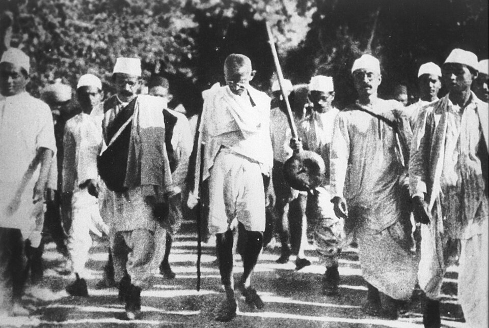

भाग 2 · भारत का इतिहास
राष्ट्रवाद के उदय (1885) से स्वतंत्रता, विभाजन तथा राज्य पुनर्गठन (1956) तक — विशेष रूप से उत्तर प्रदेश के संदर्भ में
2025 के प्रश्नपत्र में आधुनिक भारत एवं स्वतंत्रता संग्राम से लगभग 9 प्रश्न आए। यह इतिहास का सबसे अधिक कालक्रम (chronology) पूछा जाने वाला खंड है — तिथियाँ यहाँ पढ़ने की नहीं, क्रम में बैठाने की वस्तु हैं। साथ में सुमेलन (अधिवेशन↔वर्ष↔अध्यक्ष, आंदोलन↔क्षेत्र↔नेता, षड्यंत्र मुकदमा↔अभियुक्त) तथा अभिकथन–कारण बहुतायत से आते हैं।
दायरा: ब्रिटिश नीतियाँ, भू-राजस्व व्यवस्थाएँ, संवैधानिक अधिनियम (1858–1935) तथा 1857 का विद्रोह अध्याय 2.3 में हैं; कला-संस्कृति अध्याय 2.5 में। यहाँ उनका केवल संदर्भ लिया गया है।
भारतीय राष्ट्रवाद किसी एक कारण की उपज नहीं था। उन्नीसवीं शताब्दी के उत्तरार्ध में कई प्रक्रियाएँ एक साथ काम कर रही थीं, जिन्होंने पहली बार "भारत" को एक राजनीतिक इकाई के रूप में अनुभव कराया।
1885 अचानक नहीं आया। उससे पहले लगभग आधी शताब्दी तक क्षेत्रीय संगठनों ने याचिका, प्रतिवेदन एवं सभा की राजनीति का अभ्यास किया। आरंभिक संस्थाएँ ज़मींदार-प्रधान थीं; बाद की संस्थाएँ मध्यवर्गीय एवं व्यापक आधार वाली।
| संगठन | वर्ष | स्थान | संस्थापक / प्रमुख |
|---|---|---|---|
| बंगभाषा प्रकाशिका सभा | 1836 | कलकत्ता | राजा राममोहन राय के अनुयायी |
| ज़मींदारी एसोसिएशन / लैंडहोल्डर्स सोसाइटी | 1838 | कलकत्ता | द्वारकानाथ टैगोर, राधाकांत देव |
| बंगाल ब्रिटिश इंडिया सोसाइटी | 1843 | कलकत्ता | जॉर्ज थॉम्पसन |
| ब्रिटिश इंडियन एसोसिएशन | 1851 | कलकत्ता | उपर्युक्त दोनों के विलय से; देवेंद्रनाथ टैगोर |
| ईस्ट इंडिया एसोसिएशन | 1866 | लंदन | दादाभाई नौरोजी |
| पूना सार्वजनिक सभा | 1870 | पूना | एम.जी. रानाडे, गणेश वासुदेव जोशी |
| इंडियन लीग | 1875 | कलकत्ता | शिशिर कुमार घोष |
| इंडियन एसोसिएशन (भारत सभा) | 1876 | कलकत्ता | सुरेंद्रनाथ बनर्जी, आनंद मोहन बोस |
| मद्रास महाजन सभा | 1884 | मद्रास | एम. वीरराघवाचारी, पी. आनंद चार्लू, जी.एस. अय्यर |
| बॉम्बे प्रेसीडेंसी एसोसिएशन | 1885 | बम्बई | फ़िरोज़शाह मेहता, के.टी. तेलंग, बदरुद्दीन तैयबजी |
तत्कालीन उत्तर-पश्चिम प्रांत एवं अवध में भी यह प्रक्रिया चल रही थी। ब्रिटिश इंडियन एसोसिएशन ऑफ अवध (लखनऊ, 1861) अवध के तालुकदारों की संस्था थी — अर्थात यहाँ आरंभिक राजनीति भू-स्वामी वर्ग की थी, जो 1857 के बाद अंग्रेज़ों के सहयोगी बन चुका था। यही कारण है कि संयुक्त प्रांत में मध्यवर्गीय राष्ट्रवाद बंगाल-बम्बई की तुलना में कुछ देर से, किंतु बहुत गहराई से उभरा — और जब उभरा तो 1916 का लखनऊ समझौता, 1920–22 का अवध किसान आंदोलन तथा 1942 की बलिया की समानांतर सरकार जैसी घटनाएँ इसी प्रांत ने दीं।
सेवानिवृत्त सिविल सेवक ए.ओ. ह्यूम (Allan Octavian Hume) की पहल पर 28–31 दिसंबर 1885 को बम्बई के गोकुलदास तेजपाल संस्कृत पाठशाला में प्रथम अधिवेशन हुआ। अध्यक्ष व्योमेश चंद्र बनर्जी (W.C. Bonnerjee) थे और 72 प्रतिनिधि सम्मिलित हुए। अधिवेशन मूलतः पूना में प्रस्तावित था, किंतु वहाँ हैजा फैल जाने से स्थान बदलना पड़ा। संस्था का नाम पहले "इंडियन नेशनल यूनियन" था; "कांग्रेस" शब्द दादाभाई नौरोजी के सुझाव पर अपनाया गया।
कांग्रेस की स्थापना के उद्देश्य पर तीन प्रमुख व्याख्याएँ मिलती हैं। UPPSC इस बहस को अभिकथन–कारण या कथन-आधारित प्रश्न में पूछता है, इसलिए तीनों को अलग-अलग समझें।
| मत | प्रतिपादक | सार |
|---|---|---|
| सुरक्षा-वाल्व (Safety Valve) सिद्धांत | लाला लाजपत राय ने यंग इंडिया (1916) में इसे प्रस्तुत किया; बाद में आर.पी. दत्त ने India Today में मार्क्सवादी रूप दिया | ह्यूम ने असंतोष को हिंसक विस्फोट से बचाने के लिए कांग्रेस बनवाई; वह लॉर्ड डफरिन की सहमति से "सुरक्षा-वाल्व" था |
| षड्यंत्र-सिद्धांत का विस्तार | आर.पी. दत्त | कांग्रेस जन्म से ही द्विवर्गीय — ज़मींदार-पूँजीपति नेतृत्व, जिसे ब्रिटिश-अनुकूल बनाया गया |
| "बिजली-चालक" (Lightning Conductor) मत | गोपाल कृष्ण गोखले; आधुनिक इतिहासकार बिपन चंद्र | ह्यूम का उपयोग नेताओं ने स्वयं किया — कोई भारतीय ऐसा अखिल भारतीय संगठन खड़ा करता तो सरकार उसे तुरंत कुचल देती। कांग्रेस भारतीय राजनीतिक चेतना की उपज थी, ह्यूम केवल उत्प्रेरक |
"सेफ्टी वाल्व" शब्द ए.ओ. ह्यूम ने नहीं कहा — यह व्याख्या लाला लाजपत राय ने दी। इसी तरह, ह्यूम को "कांग्रेस का जनक/पिता" कहा जाता है, किंतु प्रथम अध्यक्ष व्योमेश चंद्र बनर्जी थे, ह्यूम नहीं — यह युग्म परीक्षा में उलट कर पूछा जाता है।
प्र.1 सूची-I (प्रारंभिक राजनीतिक संगठन) को सूची-II (प्रमुख संस्थापक) से सुमेलित कीजिए तथा सूचियों के नीचे दिए गए कूट का प्रयोग कर सही उत्तर चुनिए:
सूची-I: A. ईस्ट इंडिया एसोसिएशन B. मद्रास महाजन सभा C. बंबई प्रेसीडेंसी एसोसिएशन D. इंडियन एसोसिएशन
सूची-II: 1. फिरोजशाह मेहता 2. सुरेंद्रनाथ बनर्जी 3. दादाभाई नौरोजी 4. एम. वीराराघवाचारी
कूट:
प्र.2 नरमपंथी युग की कांग्रेस के संदर्भ में निम्नलिखित कथनों पर विचार कीजिए:
1. दादाभाई नौरोजी तीन बार कांग्रेस के अध्यक्ष निर्वाचित हुए।
2. बदरुद्दीन तैयबजी 1887 के मद्रास अधिवेशन के अध्यक्ष बने तथा वे कांग्रेस के प्रथम मुस्लिम अध्यक्ष थे।
3. कांग्रेस के प्रथम अधिवेशन की अध्यक्षता ए.ओ. ह्यूम ने की थी।
उपर्युक्त में से कौन-से कथन सही हैं?
नीचे दिए गए कूट से सही उत्तर चुनिए:
प्र.3 निम्नलिखित संगठनों पर विचार कीजिए तथा इन्हें उनकी स्थापना के सही कालक्रमानुसार व्यवस्थित कीजिए:
1. पूना सार्वजनिक सभा
2. इंडियन एसोसिएशन
3. ईस्ट इंडिया एसोसिएशन
4. भारतीय राष्ट्रीय कांग्रेस
नीचे दिए गए कूट से सही उत्तर चुनिए:
प्रथम बीस वर्षों में कांग्रेस का नेतृत्व उदारवादियों के हाथ था। ये अंग्रेज़ी-शिक्षित वकील, पत्रकार, शिक्षक एवं व्यापारी थे, जो ब्रिटिश न्यायप्रियता में विश्वास रखते थे और संवैधानिक साधनों से क्रमिक सुधार चाहते थे।
| नेता | पहचान / उपाधि | विशिष्ट योगदान |
|---|---|---|
| दादाभाई नौरोजी | "भारत के वयोवृद्ध पुरुष" (Grand Old Man of India) | धन-निष्कासन सिद्धांत; Poverty and Un-British Rule in India; 1892 में फ़िन्सबरी सेंट्रल से ब्रिटिश हाउस ऑफ कॉमन्स के लिए निर्वाचित प्रथम भारतीय; तीन बार कांग्रेस अध्यक्ष (1886, 1893, 1906) |
| गोपाल कृष्ण गोखले | गांधीजी के "राजनीतिक गुरु" | सर्वेंट्स ऑफ इंडिया सोसाइटी (1905, पूना); इंपीरियल लेजिस्लेटिव काउंसिल में बजट-भाषण; प्राथमिक शिक्षा विधेयक (1911) |
| सुरेंद्रनाथ बनर्जी | "भारतीय बर्क", "राष्ट्रगुरु" | इंडियन एसोसिएशन (1876); बंगाली पत्र; आत्मकथा A Nation in Making |
| फ़िरोज़शाह मेहता | "बम्बई का शेर" | बॉम्बे प्रेसीडेंसी एसोसिएशन; नगर-प्रशासन एवं संवैधानिक राजनीति |
| रमेश चंद्र दत्त | — | Economic History of India; 1899 लखनऊ अधिवेशन के अध्यक्ष |
| दिनशा वाचा | — | कांग्रेस के दीर्घकालीन कोषाध्यक्ष एवं महासचिव |
| बदरुद्दीन तैयबजी | प्रथम मुस्लिम अध्यक्ष | 1887 मद्रास अधिवेशन; बॉम्बे हाईकोर्ट के प्रथम भारतीय मुख्य न्यायाधीश (कार्यवाहक) |
| मदन मोहन मालवीय | "महामना" | संयुक्त प्रांत से; काशी हिंदू विश्वविद्यालय (1916); चार बार कांग्रेस अध्यक्ष |
| उपलब्धियाँ | सीमाएँ |
|---|---|
| आर्थिक आलोचना की ऐसी रूपरेखा जिसने पूरे आंदोलन को वैचारिक आधार दिया | जन-आधार का अभाव — शहरी शिक्षित वर्ग तक सीमित |
| भारतीय परिषद अधिनियम 1892 — विधान परिषदों का विस्तार एवं अप्रत्यक्ष निर्वाचन का सिद्धांत (विस्तार 2.3 में) | पद्धति की अप्रभाविता — 20 वर्षों में ठोस सत्ता-हस्तांतरण नहीं |
| 1893 में हाउस ऑफ कॉमन्स द्वारा आई.सी.एस. की एक साथ (simultaneous) परीक्षा का प्रस्ताव पारित (यद्यपि लागू नहीं हुआ) | ब्रिटिश न्यायप्रियता पर अतिविश्वास |
| वेल्बी आयोग (1895, भारतीय व्यय पर) में दादाभाई नौरोजी की सदस्यता | किसान, मज़दूर एवं महिला प्रश्नों की उपेक्षा |
| शस्त्र अधिनियम, वन-कानून तथा सैन्य-व्यय के विरुद्ध निरंतर प्रस्ताव; न्यायपालिका-कार्यपालिका पृथक्करण की माँग | अधिवेशन वर्ष में तीन दिन — शेष वर्ष निष्क्रियता |
| एक अखिल भारतीय राजनीतिक मंच एवं परंपरा का निर्माण — यही आगे के सभी चरणों का आधार बना | युवा पीढ़ी में असंतोष, जिसने उग्रवाद को जन्म दिया |
उदारवादियों पर प्रश्न प्रायः दो रूपों में आता है — (i) नेता↔कृति↔उपाधि सुमेलन (नौरोजी↔धन-निष्कासन, आर.सी. दत्त↔Economic History, गोखले↔सर्वेंट्स ऑफ इंडिया सोसाइटी), तथा (ii) अभिकथन–कारण जिसमें "उदारवादी विफल रहे" के कारण के रूप में जन-आधार का अभाव दिया जाता है। ध्यान रहे — सर्वेंट्स ऑफ इंडिया सोसाइटी 1905 में गोखले ने बनाई, रानाडे ने नहीं।
यह तालिका इस अध्याय की सबसे अधिक पूछी जाने वाली सूची है। इसे वर्ष, स्थान एवं अध्यक्ष — तीनों दिशाओं में याद करें।
| वर्ष | स्थान | अध्यक्ष | क्यों महत्वपूर्ण |
|---|---|---|---|
| 1885 | बम्बई | व्योमेश चंद्र बनर्जी | प्रथम अधिवेशन, 72 प्रतिनिधि |
| 1886 | कलकत्ता | दादाभाई नौरोजी | राष्ट्रीय संगठन के रूप में स्वीकृति |
| 1887 | मद्रास | बदरुद्दीन तैयबजी | प्रथम मुस्लिम अध्यक्ष |
| 1888 | इलाहाबाद | जॉर्ज यूल | प्रथम अंग्रेज़ अध्यक्ष; UP का प्रथम अधिवेशन |
| 1892 | इलाहाबाद | व्योमेश चंद्र बनर्जी | बनर्जी का दूसरा कार्यकाल |
| 1896 | कलकत्ता | रहमतुल्ला सयानी | "वंदे मातरम्" पहली बार गाया गया (रवींद्रनाथ टैगोर द्वारा) |
| 1899 | लखनऊ | रमेश चंद्र दत्त | स्थायी बंदोबस्त की माँग |
| 1905 | बनारस | गोपाल कृष्ण गोखले | बंग-भंग की निंदा; स्वदेशी का समर्थन |
| 1906 | कलकत्ता | दादाभाई नौरोजी | "स्वराज" पहली बार कांग्रेस का घोषित लक्ष्य |
| 1907 | सूरत | रासबिहारी घोष | सूरत विभाजन — अधिवेशन भंग |
| 1908 | मद्रास | रासबिहारी घोष | कांग्रेस का संविधान बना; उग्रवादी बाहर |
| 1909 | लाहौर | मदन मोहन मालवीय | मार्ले-मिंटो सुधारों पर प्रतिक्रिया |
| 1910 | इलाहाबाद | विलियम वेडरबर्न | UP का दूसरा अधिवेशन |
| 1911 | कलकत्ता | बिशन नारायण धर | "जन गण मन" पहली बार गाया गया (27 दिसंबर 1911) |
| 1916 | लखनऊ | अंबिका चरण मजूमदार | लखनऊ समझौता; नरम-गरम दल का पुनर्मिलन |
| 1917 | कलकत्ता | एनी बेसेंट | प्रथम महिला अध्यक्ष |
| 1918 (विशेष) | बम्बई | सैयद हसन इमाम | मॉन्टेग्यू-चेम्सफोर्ड योजना पर विचार |
| 1919 | अमृतसर | मोतीलाल नेहरू | जलियाँवाला बाग के बाद का अधिवेशन |
| 1920 (विशेष, सितंबर) | कलकत्ता | लाला लाजपत राय | असहयोग प्रस्ताव स्वीकृत |
| 1920 (दिसंबर) | नागपुर | सी. विजयराघवाचारियर | असहयोग की पुष्टि; कांग्रेस के संविधान में आमूल परिवर्तन |
| 1921 | अहमदाबाद | हकीम अजमल खाँ (कार्यवाहक) | सी.आर. दास जेल में; हसरत मोहानी ने पूर्ण स्वतंत्रता की माँग रखी |
| 1922 | गया | चित्तरंजन दास | परिषद-प्रवेश का प्रस्ताव पराजित |
| 1923 (विशेष, सितंबर) | दिल्ली | अबुल कलाम आज़ाद | सबसे युवा अध्यक्ष; परिषद-प्रवेश की अनुमति |
| 1924 | बेलगाँव | महात्मा गांधी | गांधीजी द्वारा अध्यक्षता किया गया एकमात्र अधिवेशन |
| 1925 | कानपुर | सरोजिनी नायडू | प्रथम भारतीय महिला अध्यक्ष |
| 1927 | मद्रास | एम.ए. अंसारी | साइमन आयोग के बहिष्कार का प्रस्ताव |
| 1928 | कलकत्ता | मोतीलाल नेहरू | नेहरू रिपोर्ट; सरकार को एक वर्ष का अल्टीमेटम |
| 1929 | लाहौर | जवाहरलाल नेहरू | पूर्ण स्वराज का प्रस्ताव |
| 1931 | कराची | वल्लभभाई पटेल | मौलिक अधिकार एवं आर्थिक नीति प्रस्ताव |
| 1933 | कलकत्ता | नेली सेनगुप्ता | तीसरी महिला अध्यक्ष |
| 1936 | लखनऊ | जवाहरलाल नेहरू | समाजवादी स्वर; इसी समय अखिल भारतीय किसान सभा की स्थापना |
| 1937 | फ़ैज़पुर | जवाहरलाल नेहरू | किसी गाँव में हुआ प्रथम अधिवेशन; कृषि कार्यक्रम |
| 1938 | हरिपुरा | सुभाष चंद्र बोस | राष्ट्रीय योजना समिति का गठन |
| 1939 | त्रिपुरी | सुभाष चंद्र बोस | पंत प्रस्ताव; बोस का त्यागपत्र |
| 1940 | रामगढ़ | अबुल कलाम आज़ाद | युद्ध-नीति पर निर्णय |
| 1946 | मेरठ | जे.बी. कृपलानी | स्वतंत्रता-पूर्व का अंतिम अधिवेशन |
| 1948 | जयपुर | पट्टाभि सीतारमैया | स्वतंत्रता के बाद का प्रथम अधिवेशन |
इलाहाबाद — 1888 (जॉर्ज यूल), 1892 (व्योमेश चंद्र बनर्जी), 1910 (विलियम वेडरबर्न)।
लखनऊ — 1899 (रमेश चंद्र दत्त), 1916 (अंबिका चरण मजूमदार), 1936 (जवाहरलाल नेहरू)।
कानपुर — 1925 (सरोजिनी नायडू)। मेरठ — 1946 (जे.बी. कृपलानी)।
अर्थात स्वतंत्रता-पूर्व संयुक्त प्रांत में कुल आठ अधिवेशन हुए। UPPSC में "निम्नलिखित में से कौन-सा अधिवेशन उत्तर प्रदेश में नहीं हुआ?" — इस रूप में प्रश्न बनता है; प्रायः फ़ैज़पुर (महाराष्ट्र) या रामगढ़ (बिहार/झारखंड) को विकल्प में डाल दिया जाता है।
प्र.1 सूची-I (कांग्रेस अधिवेशन) को सूची-II (अध्यक्ष) से सुमेलित कीजिए तथा सूचियों के नीचे दिए गए कूट का प्रयोग कर सही उत्तर चुनिए:
सूची-I: A. कलकत्ता अधिवेशन, 1886 B. मद्रास अधिवेशन, 1887 C. इलाहाबाद अधिवेशन, 1888 D. सूरत अधिवेशन, 1907
सूची-II: 1. बदरुद्दीन तैयबजी 2. रासबिहारी घोष 3. जॉर्ज यूल 4. दादाभाई नौरोजी
कूट:
प्र.2 सूची-I (कृति) को सूची-II (लेखक) से सुमेलित कीजिए तथा सूचियों के नीचे दिए गए कूट का प्रयोग कर सही उत्तर चुनिए:
सूची-I: A. इंडिया विन्स फ्रीडम B. द इंडियन स्ट्रगल C. अनहैप्पी इंडिया D. पॉवर्टी एंड अन-ब्रिटिश रूल इन इंडिया
सूची-II: 1. दादाभाई नौरोजी 2. सुभाष चंद्र बोस 3. मौलाना अबुल कलाम आज़ाद 4. लाला लाजपत राय
कूट:
प्र.3 भारतीय राष्ट्रीय कांग्रेस के प्रथम अधिवेशन (1885) के संदर्भ में, निम्नलिखित में से कौन-सा/से कथन सही है/हैं?
1. यह बंबई के गोकुलदास तेजपाल संस्कृत महाविद्यालय में आयोजित हुआ था।
2. इसमें 72 प्रतिनिधियों ने भाग लिया तथा इसकी अध्यक्षता दादाभाई नौरोजी ने की थी।
नीचे दिए गए कूट से सही उत्तर चुनिए:
वायसराय लॉर्ड कर्ज़न ने 19 जुलाई 1905 को बंगाल-विभाजन की घोषणा की, जो 16 अक्टूबर 1905 से लागू हुआ। घोषित कारण "प्रशासनिक सुविधा" था — बंगाल प्रेसीडेंसी (बंगाल + बिहार + उड़ीसा) की जनसंख्या लगभग 7.85 करोड़ थी। वास्तविक उद्देश्य राजनीतिक था: बंगाली भद्रलोक की एकजुट राष्ट्रवादी शक्ति को तोड़ना तथा हिंदू-मुस्लिम विभाजन को प्रोत्साहित करना। पूर्वी बंगाल एवं असम का नया प्रांत मुस्लिम-बहुल था जिसकी राजधानी ढाका बनी।
| कार्यक्रम | स्वरूप | उदाहरण |
|---|---|---|
| स्वदेशी | देशी उद्योगों को बढ़ावा | बंगाल केमिकल्स (प्रफुल्ल चंद्र राय), स्वदेशी भांडार, देशी कपड़ा मिलें, साबुन, माचिस |
| बहिष्कार | विदेशी वस्त्र, नमक, चीनी की होली; लिवरपूल के नमक एवं मैनचेस्टर के कपड़े का बहिष्कार | धोबियों-नाइयों द्वारा विदेशी वस्त्र पहनने वालों की सेवा से इनकार |
| राष्ट्रीय शिक्षा | सरकारी स्कूल-कॉलेज छोड़ना, समानांतर संस्थाएँ | राष्ट्रीय शिक्षा परिषद (15 अगस्त 1906), बंगाल नेशनल कॉलेज (अरविंद घोष प्राचार्य), बंगाल टेक्निकल इंस्टिट्यूट |
| समितियाँ | स्वयंसेवी दल — शारीरिक प्रशिक्षण, सामाजिक कार्य, प्रचार | स्वदेश बांधव समिति (अश्विनी कुमार दत्त, बरिसाल) |
| सांस्कृतिक रूप | लोकगीत, जात्रा, स्वदेशी मेले, चित्रकला | रवींद्रनाथ, रजनीकांत सेन, मुकुंद दास के गीत; अवनींद्रनाथ टैगोर का बंगाल स्कूल |
बंगाल से बाहर स्वदेशी: पंजाब में लाला लाजपत राय एवं अजीत सिंह (1907 में दोनों माण्डले निर्वासित); महाराष्ट्र में बाल गंगाधर तिलक; मद्रास में चिदंबरम पिल्लै (स्वदेशी स्टीम नेविगेशन कंपनी) एवं सुब्रमण्य शिव; दिल्ली में सैयद हैदर रज़ा। संयुक्त प्रांत में भी विदेशी वस्त्र-बहिष्कार की सभाएँ हुईं, यद्यपि यहाँ आंदोलन की तीव्रता बंगाल जैसी नहीं रही।
| नेता | क्षेत्र | उपाधि / पत्र | विशेष |
|---|---|---|---|
| लाला लाजपत राय | पंजाब | "पंजाब केसरी"; यंग इंडिया, पंजाबी | आर्य समाजी; 1920 कलकत्ता विशेष अधिवेशन के अध्यक्ष; 1928 में साइमन-विरोधी प्रदर्शन में लाठी-प्रहार से आहत, 17 नवंबर 1928 को निधन |
| बाल गंगाधर तिलक | महाराष्ट्र | "लोकमान्य"; वैलेंटाइन शिरोल ने "भारतीय अशांति का जनक" कहा; केसरी (मराठी), मराठा (अंग्रेज़ी) | गणपति उत्सव (1893) एवं शिवाजी उत्सव (1895); "स्वराज्य मेरा जन्मसिद्ध अधिकार है और मैं इसे लेकर रहूँगा"; 1908–14 माण्डले जेल में गीता रहस्य की रचना |
| बिपिन चंद्र पाल | बंगाल | "क्रांतिकारी विचारों का जनक"; न्यू इंडिया | स्वदेशी-बहिष्कार के प्रबल प्रवक्ता |
| अरविंद घोष | बंगाल | बंदे मातरम्, इंदु प्रकाश में "New Lamps for Old" | बंगाल नेशनल कॉलेज के प्राचार्य; अलीपुर षड्यंत्र मुकदमे (1908) के बाद राजनीति त्याग कर पांडिचेरी |
लाल = लाला लाजपत राय (पंजाब), बाल = बाल गंगाधर तिलक (महाराष्ट्र), पाल = बिपिन चंद्र पाल (बंगाल)। विकल्पों में "पाल" के स्थान पर बिपिन चंद्र के बजाय कृष्ण कुमार मित्र या मोतीलाल घोष डालकर भ्रम बनाया जाता है। अरविंद घोष इस त्रिमूर्ति में सम्मिलित नहीं हैं।
उग्रवादी चाहते थे कि 1907 का अधिवेशन नागपुर में हो और अध्यक्ष तिलक या लाजपत राय हों, ताकि कलकत्ता (1906) के स्वराज, स्वदेशी, बहिष्कार तथा राष्ट्रीय शिक्षा वाले प्रस्ताव दोहराए जा सकें। उदारवादियों ने अधिवेशन सूरत में रखा — नियम था कि मेज़बान प्रांत का नेता अध्यक्ष नहीं बन सकता, जिससे तिलक (बम्बई प्रेसीडेंसी) स्वतः बाहर हो गए। अध्यक्ष रासबिहारी घोष बनाए गए। दिसंबर 1907 में अधिवेशन हंगामे में भंग हो गया और कांग्रेस दो भागों में बँट गई। 1908 के मद्रास अधिवेशन में बना नया संविधान उग्रवादियों को व्यावहारिक रूप से बाहर रखता था।
परिणाम: सरकार ने "फूट डालो" की नीति के तहत उदारवादियों को मार्ले-मिंटो सुधार (1909) का लालच दिया और उग्रवादियों पर दमन किया — 1908 में तिलक को छह वर्ष की सज़ा। आंदोलन की धार कुंद पड़ी और बहुत-से युवा क्रांतिकारी मार्ग की ओर मुड़े। दोनों दल 1916 के लखनऊ अधिवेशन में पुनः एक हुए।
सूरत विभाजन पर अभिकथन–कारण का आदर्श स्वरूप: अभिकथन (A) — 1907 में कांग्रेस विभाजित हो गई। कारण (R) — उग्रवादी चाहते थे कि अधिवेशन नागपुर में हो तथा अध्यक्ष लाला लाजपत राय या तिलक हों। दोनों सत्य हैं और R, A की सही व्याख्या करता है।
| आधार | उदारवादी (नरम दल) | उग्रवादी (गरम दल) |
|---|---|---|
| सामाजिक आधार | शहरी उच्च मध्यवर्ग, वकील-पत्रकार | निम्न मध्यवर्ग, छात्र, शहरी युवा |
| लक्ष्य | साम्राज्य के भीतर स्वशासन | स्वराज — आरंभ में स्वशासन, आगे पूर्ण स्वतंत्रता |
| पद्धति | याचिका, प्रस्ताव, संवैधानिक आंदोलन | निष्क्रिय प्रतिरोध, बहिष्कार, आत्मबलिदान |
| ब्रिटिश शासन पर दृष्टि | ईश्वर की देन / सुधार-योग्य | शोषणकारी, जिसे हटाना ही है |
| वैचारिक प्रेरणा | पाश्चात्य उदारवाद | भारतीय परंपरा, धार्मिक-सांस्कृतिक प्रतीक |
| प्रतिनिधि | गोखले, फ़िरोज़शाह मेहता, दादाभाई, सुरेंद्रनाथ | तिलक, लाजपत राय, बिपिन चंद्र पाल, अरविंद |
प्र.1 स्वदेशी आंदोलन (1905-08) के संदर्भ में, निम्नलिखित में से कौन-सा/से कथन सही है/हैं?
1. राष्ट्रीय शिक्षा के अंग के रूप में 1906 में 'बंगाल नेशनल कॉलेज' की स्थापना हुई, जिसके प्रथम प्राचार्य अरविंद घोष बने।
2. रवींद्रनाथ टैगोर ने 'आमार सोनार बांग्ला' की रचना इसी आंदोलन के दौरान की थी।
नीचे दिए गए कूट से सही उत्तर चुनिए:
प्र.2 नीचे दो कथन दिए गए हैं, जिनमें से एक को अभिकथन (A) तथा दूसरे को कारण (R) कहा गया है।
अभिकथन (A): बाल गंगाधर तिलक ने महाराष्ट्र में गणपति उत्सव तथा शिवाजी उत्सव का आरंभ किया।
कारण (R): वे इन सार्वजनिक उत्सवों के माध्यम से जनसाधारण में राष्ट्रीय चेतना का संचार करना चाहते थे।
नीचे दिए गए कूट से सही उत्तर चुनिए:
प्र.3 निम्नलिखित में से कौन 'लाल-बाल-पाल' त्रिमूर्ति का सदस्य नहीं था?
स्वदेशी आंदोलन के दमन तथा सूरत विभाजन के बाद युवाओं का एक वर्ग इस निष्कर्ष पर पहुँचा कि निवेदन एवं निष्क्रिय प्रतिरोध, दोनों अपर्याप्त हैं। इस चरण का स्वरूप था — गुप्त समितियाँ, व्यक्तिगत वीरता, अधिकारियों की हत्या तथा शस्त्र-संग्रह; विचारधारा में राष्ट्रवाद का धार्मिक-सांस्कृतिक रंग प्रधान था।
| संगठन / संस्था | वर्ष | स्थान | संस्थापक |
|---|---|---|---|
| मित्र मेला → अभिनव भारत | 1899 → 1904 | नासिक | विनायक दामोदर सावरकर एवं गणेश सावरकर |
| अनुशीलन समिति | मार्च 1902 | कलकत्ता | प्रमथनाथ मित्र (बैरिस्टर); सतीश चंद्र बसु |
| ढाका अनुशीलन समिति | 1906 | ढाका | पुलिन बिहारी दास |
| युगांतर (जुगांतर) | 1906 | कलकत्ता | बारींद्र कुमार घोष, भूपेंद्रनाथ दत्त (युगांतर साप्ताहिक) |
| इंडिया हाउस | 1905 | लंदन | श्यामजी कृष्ण वर्मा (The Indian Sociologist); 1907 के बाद सावरकर |
| पेरिस केंद्र | 1909 के आसपास | पेरिस | मैडम भीकाजी कामा, एस.आर. राणा (वंदे मातरम् पत्र) |
| गदर पार्टी (हिंदी एसोसिएशन ऑफ द पैसिफ़िक कोस्ट) | 1913 | सैन फ्रांसिस्को / एस्टोरिया (अमेरिका) | अध्यक्ष सोहन सिंह भकना, सचिव लाला हरदयाल, कोषाध्यक्ष पंडित कांशी राम; गदर पत्र 1 नवंबर 1913 से |
| बर्लिन समिति / भारतीय स्वतंत्रता समिति | 1915 | बर्लिन | वीरेंद्रनाथ चट्टोपाध्याय, भूपेंद्रनाथ दत्त |
बनारस षड्यंत्र मुकदमा (1915) — सचींद्रनाथ सान्याल (वाराणसी) को आजीवन कारावास, अंडमान भेजा गया। रासबिहारी बोस ने 1913–15 के वर्षों में बनारस एवं देहरादून को अपनी गतिविधियों का केंद्र बनाया था।
मैनपुरी षड्यंत्र मुकदमा (1918) — गेंदालाल दीक्षित तथा राम प्रसाद 'बिस्मिल' (शाहजहाँपुर) की "मातृवेदी" संस्था के विरुद्ध; बिस्मिल भूमिगत हो गए और आगे चलकर HRA एवं काकोरी के केंद्रीय पात्र बने। इस प्रकार UP की क्रांतिकारी परंपरा 1915–18 में ही जड़ें जमा चुकी थी।
असहयोग आंदोलन की अचानक वापसी (फरवरी 1922) से निराश युवाओं ने पुनः क्रांतिकारी मार्ग चुना। किंतु इस बार विचारधारा बदली हुई थी — धार्मिक प्रतीकों के स्थान पर समाजवाद, गणतंत्र एवं वर्ग-संघर्ष। लक्ष्य "व्यक्तिगत आतंक" से हटकर "जन-क्रांति की तैयारी" बना।
| संगठन | तिथि / वर्ष | स्थान | प्रमुख व्यक्ति |
|---|---|---|---|
| हिंदुस्तान रिपब्लिकन एसोसिएशन (HRA) | अक्टूबर 1924 | कानपुर | सचींद्रनाथ सान्याल, राम प्रसाद बिस्मिल, जोगेश चंद्र चटर्जी; घोषणापत्र "The Revolutionary" सान्याल द्वारा लिखित |
| नौजवान भारत सभा | मार्च 1926 | लाहौर | भगत सिंह (महासचिव), भगवती चरण वोहरा, रामचंद्र (अध्यक्ष) |
| हिंदुस्तान सोशलिस्ट रिपब्लिकन एसोसिएशन (HSRA) | सितंबर 1928 | फ़िरोज़शाह कोटला, दिल्ली | भगत सिंह, शिव वर्मा, सुखदेव, विजय कुमार सिन्हा; चंद्रशेखर आज़ाद — कमांडर-इन-चीफ़ |
| इंडियन रिपब्लिकन आर्मी (चटगाँव शाखा) | 1930 | चटगाँव (बंगाल) | सूर्य सेन "मास्टरदा" |
द्वितीय चरण का केंद्र-बिंदु उत्तर प्रदेश ही था। HRA की स्थापना कानपुर में हुई; काकोरी लखनऊ के पास है; बिस्मिल शाहजहाँपुर के, अशफ़ाक़उल्ला खाँ भी शाहजहाँपुर के; फाँसियाँ गोरखपुर, फ़ैज़ाबाद, नैनी (इलाहाबाद) एवं गोंडा की जेलों में हुईं; चंद्रशेखर आज़ाद इलाहाबाद में शहीद हुए और उनके परिवार का संबंध उन्नाव से था। कानपुर के गणेश शंकर विद्यार्थी का पत्र प्रताप इन क्रांतिकारियों का वैचारिक मंच था।
| मुकदमा | वर्ष | प्रमुख अभियुक्त / संदर्भ |
|---|---|---|
| अलीपुर (मानिकतल्ला) षड्यंत्र | 1908 | बारींद्र कुमार घोष, उल्लासकर दत्त; अरविंद घोष बरी |
| नासिक षड्यंत्र | 1909–10 | अनंत कान्हेरे, वी.डी. सावरकर |
| दिल्ली-लाहौर षड्यंत्र | 1912–14 | रासबिहारी बोस, बसंत कुमार विश्वास, अमीर चंद |
| बनारस षड्यंत्र | 1915 | सचींद्रनाथ सान्याल |
| लाहौर षड्यंत्र (प्रथम) | 1915 | करतार सिंह सराभा एवं ग़दर क्रांतिकारी |
| मैनपुरी षड्यंत्र | 1918 | गेंदालाल दीक्षित, राम प्रसाद बिस्मिल |
| कानपुर बोल्शेविक षड्यंत्र | 1924 | एम.एन. रॉय, एस.ए. डांगे, मुज़फ़्फ़र अहमद, शौकत उस्मानी, नलिनी गुप्ता |
| काकोरी षड्यंत्र | 1925–27 | राम प्रसाद बिस्मिल, अशफ़ाक़उल्ला खाँ, रोशन सिंह, राजेंद्र लाहिड़ी |
| मेरठ षड्यंत्र | 1929–33 | मुज़फ़्फ़र अहमद, एस.ए. डांगे, शौकत उस्मानी, फिलिप स्प्रैट, बेंजामिन ब्रैडली |
| लाहौर षड्यंत्र (द्वितीय) | 1929–31 | भगत सिंह, सुखदेव, राजगुरु, बटुकेश्वर दत्त |
षड्यंत्र मुकदमे UPPSC का प्रिय सुमेलन-विषय हैं, क्योंकि इनमें तीन उत्तर प्रदेश के हैं — मैनपुरी, कानपुर (बोल्शेविक) तथा मेरठ, और काकोरी भी UP में। प्रश्न प्रायः "मुकदमा ↔ स्थान" या "मुकदमा ↔ अभियुक्त" के रूप में आता है।
प्र.1 सूची-I (षड्यंत्र मुकदमा) को सूची-II (प्रमुख अभियुक्त) से सुमेलित कीजिए तथा सूचियों के नीचे दिए गए कूट का प्रयोग कर सही उत्तर चुनिए:
सूची-I: A. दिल्ली षड्यंत्र मुकदमा (1912) B. अलीपुर बम षड्यंत्र मुकदमा (1908) C. प्रथम लाहौर षड्यंत्र मुकदमा (1915) D. बनारस षड्यंत्र मुकदमा (1916)
सूची-II: 1. सचींद्रनाथ सान्याल 2. करतार सिंह सराभा 3. बसंत कुमार विश्वास 4. बारींद्र कुमार घोष
कूट:
प्र.2 नीचे दो कथन दिए गए हैं, जिनमें से एक को अभिकथन (A) तथा दूसरे को कारण (R) कहा गया है।
अभिकथन (A): काकोरी षड्यंत्र मुकदमे में मृत्युदंड पाए चारों क्रांतिकारियों को एक ही तिथि को एक ही जेल में फाँसी दी गई थी।
कारण (R): राजेंद्र नाथ लाहिड़ी को निर्धारित तिथि से दो दिन पूर्व 17 दिसंबर 1927 को गोंडा जेल में फाँसी दे दी गई थी।
नीचे दिए गए कूट से सही उत्तर चुनिए:
प्र.3 सूची-I (क्रांतिकारी घटना) को सूची-II (वर्ष) से सुमेलित कीजिए तथा सूचियों के नीचे दिए गए कूट का प्रयोग कर सही उत्तर चुनिए:
सूची-I: A. काकोरी ट्रेन कार्रवाई B. चटगाँव शस्त्रागार छापा C. हिंदुस्तान सोशलिस्ट रिपब्लिकन एसोसिएशन का गठन D. केंद्रीय विधानसभा में बम विस्फोट
सूची-II: 1. 1928 2. 1930 3. 1929 4. 1925
कूट:
1 अक्टूबर 1906 को शिमला शिष्टमंडल (Simla Deputation) ने आगा खाँ के नेतृत्व में वायसराय लॉर्ड मिंटो से भेंट कर मुसलमानों के लिए पृथक प्रतिनिधित्व तथा जनसंख्या से अधिक भार (weightage) की माँग रखी। इसके तीन महीने बाद 30 दिसंबर 1906 को ढाका में मुहम्मडन एजुकेशनल कॉन्फ्रेंस के वार्षिक अधिवेशन के अवसर पर अखिल भारतीय मुस्लिम लीग की स्थापना हुई। प्रमुख भूमिका नवाब सलीमुल्लाह (ढाका), नवाब मोहसिन-उल-मुल्क तथा नवाब विकार-उल-मुल्क की थी; आगा खाँ प्रथम (मानद) अध्यक्ष बने। 1909 के मार्ले-मिंटो सुधारों में पृथक निर्वाचक मंडल स्वीकार कर लिया गया (विस्तार अध्याय 2.3 में)।
1913 में लीग ने अपने लखनऊ अधिवेशन में लक्ष्य बदलकर "भारत के लिए उपयुक्त स्वशासन" कर लिया — यही परिवर्तन आगे चलकर कांग्रेस से समझौते का आधार बना। उसी वर्ष मुहम्मद अली जिन्ना लीग में सम्मिलित हुए, जो पहले से कांग्रेस के सदस्य थे।
दिसंबर 1916 में कांग्रेस तथा मुस्लिम लीग के अधिवेशन एक ही नगर लखनऊ में हुए। कांग्रेस अधिवेशन के अध्यक्ष अंबिका चरण मजूमदार थे और लीग के अधिवेशन की अध्यक्षता मुहम्मद अली जिन्ना ने की। यह अधिवेशन दो दृष्टियों से युगांतरकारी था — (i) नरम एवं गरम दल का पुनर्मिलन (तिलक की वापसी), तथा (ii) कांग्रेस-लीग समझौता।
| पक्ष | प्रमुख प्रावधान |
|---|---|
| दोनों की साझा माँग | ब्रिटिश सरकार से स्वशासन (self-government) की स्पष्ट घोषणा |
| विधान परिषदों में निर्वाचित सदस्यों का बहुमत तथा उत्तरदायी शासन की दिशा में कदम | |
| कांग्रेस की स्वीकृतियाँ | पृथक निर्वाचक मंडल (separate electorates) को मान्यता — यही समझौते का सबसे विवादास्पद अंश |
| अल्पसंख्यक प्रांतों में मुसलमानों को जनसंख्या से अधिक भार (weightage); बदले में पंजाब एवं बंगाल में, जहाँ वे बहुसंख्यक थे, कम प्रतिनिधित्व | |
| केंद्रीय विधानमंडल में मुसलमानों के लिए एक-तिहाई स्थान | |
| किसी समुदाय से संबंधित प्रस्ताव पारित नहीं होगा यदि उस समुदाय के तीन-चौथाई निर्वाचित सदस्य उसका विरोध करें |
महत्व एवं आलोचना: इसने हिंदू-मुस्लिम एकता का ऐसा क्षण रचा जिसके कारण सरोजिनी नायडू ने जिन्ना को "हिंदू-मुस्लिम एकता का राजदूत" कहा। किंतु दीर्घकाल में कांग्रेस ने पृथक निर्वाचक मंडल को स्वीकार कर साम्प्रदायिक प्रतिनिधित्व के सिद्धांत को वैधता दे दी — जिसे आगे चलकर पलटना असंभव हो गया। समझौते में हिंदू-मुस्लिम जनता के बीच कोई संवाद नहीं था; यह केवल दो नेतृत्व-समूहों का समझौता था।
लखनऊ समझौता UPPSC का सर्वाधिक पूछा जाने वाला UP-केंद्रित स्वतंत्रता-संग्राम बिंदु है। ध्यान रखें — 1916 का लखनऊ अधिवेशन संयुक्त प्रांत की राजधानी में हुआ, इसके अध्यक्ष अंबिका चरण मजूमदार थे (जिन्ना नहीं — जिन्ना ने लीग के अधिवेशन की अध्यक्षता की)। संयुक्त प्रांत ही वह प्रांत था जहाँ मुसलमान अल्पसंख्यक थे और इसीलिए "weightage" की माँग का सबसे बड़ा लाभार्थी यही प्रांत था।
प्रथम विश्वयुद्ध के दौरान आयरिश होम रूल लीग से प्रेरित होकर दो समानांतर लीग बनीं। उद्देश्य था — युद्धकाल में सरकार पर दबाव बनाकर स्वशासन प्राप्त करना, तथा राजनीति को अधिवेशन-कक्ष से निकालकर निरंतर प्रचार-अभियान में बदलना।
| आधार | तिलक की लीग | एनी बेसेंट की लीग |
|---|---|---|
| नाम | इंडियन होम रूल लीग | ऑल इंडिया होम रूल लीग |
| स्थापना | अप्रैल 1916 (बम्बई प्रांतीय सम्मेलन, बेलगाँव) | सितंबर 1916, मद्रास |
| मुख्यालय | पूना | अड्यार (मद्रास) |
| कार्यक्षेत्र | महाराष्ट्र (बम्बई नगर को छोड़कर), कर्नाटक, मध्य प्रांत एवं बरार | शेष सम्पूर्ण भारत (बम्बई नगर सहित) |
| प्रमुख सहयोगी | जोसेफ बैप्टिस्टा, एन.सी. केलकर, जी.एस. खापर्डे, मुहम्मद अली जिन्ना | जॉर्ज अरुंडेल (संगठन सचिव), बी.पी. वाडिया, सी.पी. रामास्वामी अय्यर, मोतीलाल नेहरू, जवाहरलाल नेहरू, तेज बहादुर सप्रू |
| पत्र | केसरी, मराठा | न्यू इंडिया, कॉमनवील |
जून 1917 में मद्रास सरकार ने एनी बेसेंट को उनके सहयोगियों सहित नज़रबंद कर दिया — इससे आंदोलन को अभूतपूर्व लोकप्रियता मिली। सितंबर 1917 में उन्हें रिहा किया गया और उसी वर्ष वे कांग्रेस की अध्यक्ष चुनी गईं। मॉन्टेग्यू घोषणा (अगस्त 1917) तथा 1918 के बाद तिलक के इंग्लैंड चले जाने एवं बेसेंट के नरम पड़ जाने से आंदोलन शिथिल हो गया, किंतु इसने असहयोग आंदोलन के लिए कार्यकर्ताओं का एक तैयार संवर्ग छोड़ा।
संयुक्त प्रांत में होम रूल आंदोलन बेसेंट की लीग के अंतर्गत चला। जवाहरलाल नेहरू ने इसी आंदोलन से सक्रिय राजनीति आरंभ की — वे इलाहाबाद शाखा के सचिव बने; मोतीलाल नेहरू तथा इलाहाबाद के तेज बहादुर सप्रू भी इससे जुड़े। इस प्रकार नेहरू परिवार का राजनीतिक उत्थान होम रूल आंदोलन से आरंभ होता है।
भारत सचिव एडविन सैमुअल मॉन्टेग्यू ने ब्रिटिश संसद में घोषणा की कि सरकार की नीति है — "प्रशासन की प्रत्येक शाखा में भारतीयों की बढ़ती हुई सहभागिता तथा स्वशासी संस्थाओं का क्रमिक विकास, जिससे ब्रिटिश साम्राज्य के अभिन्न अंग के रूप में भारत में उत्तरदायी शासन (responsible government) की क्रमिक स्थापना हो सके।"
मॉन्टेग्यू घोषणा — 20 अगस्त 1917 (घोषणा), भारत शासन अधिनियम — 1919 (क़ानून)। इन दोनों को एक वर्ष में न मिलाएँ। साथ ही एडविन मॉन्टेग्यू भारत सचिव थे, वायसराय नहीं — वायसराय लॉर्ड चेम्सफोर्ड थे।
प्र.1 'होम रूल आंदोलन (1916)' के संदर्भ में, निम्नलिखित में से कौन-सा/से कथन सही है/हैं?
1. बाल गंगाधर तिलक ने अप्रैल 1916 में बेलगाम में इंडियन होम रूल लीग की स्थापना की।
2. एनी बेसेंट की होम रूल लीग का मुख्यालय मद्रास के निकट अड्यार में था।
नीचे दिए गए कूट से सही उत्तर चुनिए:
प्र.2 1858 के भारत शासन अधिनियम के संदर्भ में निम्नलिखित कथनों पर विचार कीजिए:
1. इसने भारत में उत्तरदायी शासन की स्थापना की।
2. इसने बोर्ड ऑफ कंट्रोल को यथावत बनाए रखा।
3. इसने भारत सचिव की सहायता हेतु 15 सदस्यीय भारत परिषद (Council of India) का गठन किया।
नीचे दिए गए कूट से सही उत्तर चुनिए:
प्र.3 निम्नलिखित घटनाओं पर विचार कीजिए तथा इन्हें सही कालक्रमानुसार क्रम में व्यवस्थित कीजिए:
1. लखनऊ समझौता
2. मॉर्ले-मिंटो सुधार
3. मॉण्टेग्यू घोषणा
4. बंगाल विभाजन का रद्द होना
नीचे दिए गए कूट से सही उत्तर चुनिए:
गांधीजी 9 जनवरी 1915 को दक्षिण अफ्रीका से भारत लौटे (इसी तिथि पर आज "प्रवासी भारतीय दिवस" मनाया जाता है)। गोखले की सलाह पर उन्होंने एक वर्ष केवल देश-भ्रमण किया और 1915 में अहमदाबाद के कोचरब में आश्रम स्थापित किया, जो 1917 में साबरमती स्थानांतरित हुआ। उनके तीन आरंभिक सत्याग्रह स्थानीय एवं आर्थिक प्रश्नों पर थे — इसी से उन्होंने अपनी पद्धति का परीक्षण किया।
| सत्याग्रह | वर्ष | स्थान | मुद्दा | विशेषता एवं सहयोगी |
|---|---|---|---|---|
| चंपारण | 1917 | चंपारण (बिहार) | नील की खेती की तिनकठिया पद्धति — 3/20 भाग भूमि पर अनिवार्य नील | भारत में गांधीजी का प्रथम सत्याग्रह; निमंत्रण राजकुमार शुक्ल का; गांधीजी 15 अप्रैल 1917 को मोतीहारी पहुँचे; सहयोगी — राजेंद्र प्रसाद, ब्रजकिशोर प्रसाद, अनुग्रह नारायण सिन्हा, महादेव देसाई, जे.बी. कृपलानी। परिणाम — चंपारण कृषि अधिनियम, 1918 |
| अहमदाबाद मिल हड़ताल | 1918 | अहमदाबाद | प्लेग बोनस समाप्त करने पर मिल-मज़दूरों की माँग | गांधीजी का प्रथम आमरण अनशन (15 मार्च 1918); मिल-मालिक अंबालाल साराभाई की बहन अनसूया साराभाई मज़दूरों के पक्ष में; पंचाट से 35% वेतन-वृद्धि |
| खेड़ा | 1918 | खेड़ा (गुजरात) | फसल खराब होने पर भी भू-राजस्व की वसूली; नियमानुसार उपज एक-चौथाई से कम होने पर छूट बनती थी | गांधीजी का प्रथम असहयोग-प्रकार का आंदोलन (कर-बंदी); सहयोगी — वल्लभभाई पटेल, इंदुलाल याज्ञनिक; सरकार ने संपन्न किसानों से ही वसूली का आदेश दिया |
तीनों को उनके "प्रथम" से जोड़कर याद रखें — चंपारण = प्रथम सत्याग्रह, अहमदाबाद = प्रथम अनशन, खेड़ा = प्रथम असहयोग/कर-बंदी। चंपारण बिहार में है, शेष दोनों गुजरात में — यही सुमेलन का आधार बनता है।
सर सिडनी रौलट की अध्यक्षता वाली राजद्रोह समिति की सिफ़ारिश पर मार्च 1919 में अराजक तथा क्रांतिकारी अपराध अधिनियम (Anarchical and Revolutionary Crimes Act) पारित हुआ — प्रचलित नाम रौलट एक्ट। इसमें बिना मुकदमे के दो वर्ष तक नज़रबंदी तथा बंद कमरे में सुनवाई का प्रावधान था। इंपीरियल लेजिस्लेटिव काउंसिल के सभी भारतीय सदस्यों ने विरोध में मत दिया; जिन्ना ने त्यागपत्र दे दिया। जनता ने इसे "ना दलील, ना वकील, ना अपील" कहा।
रौलट सत्याग्रह की देशव्यापी हड़ताल — 6 अप्रैल 1919; जलियाँवाला बाग हत्याकांड — 13 अप्रैल 1919। दोनों एक ही माह की, केवल एक सप्ताह के अंतर की तिथियाँ हैं और विकल्पों में आपस में बदल दी जाती हैं। इसी तरह डायर (गोली चलाने वाला सैन्य अधिकारी) तथा ओ'ड्वायर (पंजाब का उपराज्यपाल) दो अलग व्यक्ति हैं — ऊधम सिंह ने ओ'ड्वायर को मारा था।
प्रथम विश्वयुद्ध में पराजित तुर्की के सुल्तान (जो इस्लामी जगत के खलीफ़ा माने जाते थे) के साथ मित्र राष्ट्रों के कठोर व्यवहार, विशेषकर सेव्र संधि (मई 1920) के विरुद्ध भारतीय मुसलमानों ने आंदोलन छेड़ा। गांधीजी ने इसमें हिंदू-मुस्लिम एकता की ऐतिहासिक संभावना देखी और असहयोग को खिलाफत से जोड़ दिया।
सितंबर 1920 के कलकत्ता विशेष अधिवेशन (अध्यक्ष — लाला लाजपत राय) में असहयोग का प्रस्ताव स्वीकृत हुआ और दिसंबर 1920 के नागपुर अधिवेशन (अध्यक्ष — सी. विजयराघवाचारियर) में उसकी पुष्टि हुई। गांधीजी ने वचन दिया कि यदि कार्यक्रम पूर्णतः लागू हुआ तो "एक वर्ष में स्वराज" मिलेगा।
| नकारात्मक (बहिष्कार) | रचनात्मक (विकल्प-निर्माण) |
|---|---|
| उपाधियों एवं अवैतनिक पदों का त्याग | राष्ट्रीय विद्यालय एवं महाविद्यालय |
| सरकारी स्कूल-कॉलेजों का बहिष्कार | पंचायतों द्वारा विवादों का निपटारा |
| न्यायालयों का बहिष्कार (वकीलों द्वारा प्रैक्टिस त्याग) | चरखा एवं खादी — स्वदेशी का ठोस रूप |
| 1919 के अधिनियम के अंतर्गत विधान परिषदों के चुनाव का बहिष्कार | तिलक स्वराज कोष — छह माह में ₹1 करोड़ संग्रह |
| विदेशी वस्त्रों का बहिष्कार एवं होलिका-दहन | अस्पृश्यता-निवारण एवं हिंदू-मुस्लिम एकता |
राष्ट्रीय शिक्षण-संस्थाएँ: जामिया मिलिया इस्लामिया (अक्टूबर 1920, अलीगढ़ में स्थापित, बाद में दिल्ली), काशी विद्यापीठ (फरवरी 1921, बनारस), गुजरात विद्यापीठ (अहमदाबाद), बिहार विद्यापीठ तथा बंगाल नेशनल यूनिवर्सिटी।
4 फरवरी 1922 को गोरखपुर ज़िले (संयुक्त प्रांत) के चौरी-चौरा में जुलूस पर पुलिस की गोलीबारी के बाद उत्तेजित भीड़ ने थाने में आग लगा दी, जिसमें 22 पुलिसकर्मी जल मरे। गांधीजी ने इसे अपने सिद्धांत का उल्लंघन माना और 12 फरवरी 1922 को बारदोली में कांग्रेस कार्य समिति की बैठक में आंदोलन स्थगित करने का प्रस्ताव पारित हुआ। मोतीलाल नेहरू, चित्तरंजन दास एवं सुभाष चंद्र बोस जैसे नेताओं ने इस निर्णय का तीव्र विरोध किया।
10 मार्च 1922 को गांधीजी गिरफ़्तार हुए; 18 मार्च 1922 को न्यायाधीश सी.एन. ब्रूमफ़ील्ड ने उन्हें राजद्रोह के आरोप में छह वर्ष की सज़ा सुनाई (यही प्रसिद्ध "महान मुकदमा"); स्वास्थ्य-कारणों से फरवरी 1924 में रिहाई हुई।
चौरी-चौरा वह बिंदु है जहाँ उत्तर प्रदेश ने पूरे राष्ट्रीय आंदोलन की दिशा बदल दी। ध्यान दें — यह गोरखपुर ज़िले में है (आज चौरी-चौरा तहसील), तिथि 4 फरवरी 1922, तथा आंदोलन की वापसी का निर्णय बारदोली (गुजरात) में 12 फरवरी 1922 को हुआ। 2021–22 में इस घटना का शताब्दी वर्ष उत्तर प्रदेश सरकार द्वारा मनाया गया, तथा चौरी-चौरा में शहीद स्मारक स्थित है।
चौरी-चौरा कांड 4 फरवरी 1922 — किंतु आंदोलन की वापसी 4 फरवरी को नहीं, 12 फरवरी 1922 को हुई और वह भी बारदोली में। कई विकल्पों में "चौरी-चौरा में असहयोग वापस लिया गया" लिखा जाता है — यह ग़लत है। इसी प्रकार बारदोली प्रस्ताव (1922) को बारदोली सत्याग्रह (1928) से न मिलाएँ — दूसरा वल्लभभाई पटेल का किसान आंदोलन था।
प्र.1 'गांधीजी के आरंभिक सत्याग्रह' के संदर्भ में, निम्नलिखित में से कौन-सा/से कथन सही है/हैं?
1. चंपारण सत्याग्रह (1917) 'तिनकठिया' पद्धति के विरुद्ध था।
2. खेड़ा सत्याग्रह (1918) फसल खराब होने पर लगान में छूट की माँग को लेकर चलाया गया।
नीचे दिए गए कूट से सही उत्तर चुनिए:
प्र.2 निम्नलिखित घटनाओं पर विचार कीजिए तथा इन्हें सही कालक्रमानुसार क्रम में व्यवस्थित कीजिए:
1. रौलट सत्याग्रह
2. चंपारण सत्याग्रह
3. असहयोग आंदोलन का आरंभ
4. जलियाँवाला बाग हत्याकांड
नीचे दिए गए कूट से सही उत्तर चुनिए:
प्र.3 सूची-I (आंदोलन/सत्याग्रह) को सूची-II (वर्ष) से सुमेलित कीजिए तथा सूचियों के नीचे दिए गए कूट का प्रयोग कर सही उत्तर चुनिए:
सूची-I: A. वैकम सत्याग्रह B. महाड़ सत्याग्रह C. बारदोली सत्याग्रह D. तेभागा आंदोलन
सूची-II: 1. 1927 2. 1946 3. 1924 4. 1928
कूट:
आंदोलन की वापसी के बाद कांग्रेस में यह प्रश्न खड़ा हुआ कि निष्क्रियता के इन वर्षों में क्या किया जाए। दिसंबर 1922 के गया अधिवेशन में अध्यक्ष चित्तरंजन दास ने विधान परिषदों में प्रवेश कर "भीतर से अवरोध" (obstruction from within) का प्रस्ताव रखा, जो मतदान में पराजित हो गया। दास ने अध्यक्ष-पद से त्यागपत्र दे दिया।
| पक्ष | नेता | मत |
|---|---|---|
| परिवर्तनवादी / स्वराजी | चित्तरंजन दास, मोतीलाल नेहरू, अजमल खाँ, विट्ठलभाई पटेल, एन.सी. केलकर | परिषदों में जाकर उन्हें भीतर से पंगु बनाओ; अन्यथा राजनीतिक शून्य को सरकार-समर्थक भर लेंगे |
| अपरिवर्तनवादी (No-changers) | राजेंद्र प्रसाद, वल्लभभाई पटेल, सी. राजगोपालाचारी, एम.ए. अंसारी | परिषद-प्रवेश असहयोग के सिद्धांत के विरुद्ध; रचनात्मक कार्यक्रम (खादी, अस्पृश्यता-निवारण, राष्ट्रीय शिक्षा) से जन-आधार बनाओ |
स्वराज पार्टी का उत्तरी नेतृत्व इलाहाबाद से संचालित होता था — मोतीलाल नेहरू केंद्रीय विधानसभा में स्वराजी दल के नेता थे और संयुक्त प्रांत स्वराजी राजनीति का प्रमुख क्षेत्र था। इसी काल में आनंद भवन राष्ट्रीय राजनीति का केंद्र बना; 1930 में मोतीलाल नेहरू ने इसे कांग्रेस को दान कर दिया और तब इसका नाम "स्वराज भवन" पड़ा। पास ही नया आनंद भवन बना, जिसे 1970 में इंदिरा गांधी ने राष्ट्र को समर्पित किया।
30 नवंबर 1928 को लखनऊ में साइमन आयोग के विरुद्ध प्रदर्शन पर घुड़सवार पुलिस ने लाठी चलाई। इसमें जवाहरलाल नेहरू तथा गोविंद बल्लभ पंत दोनों घायल हुए। लंबे कद के कारण पंत जी को अधिक चोट आई और उनकी पीठ की वह पीड़ा जीवन भर बनी रही — वे इसके बाद सीधे खड़े नहीं हो पाते थे। यही गोविंद बल्लभ पंत 1937 में संयुक्त प्रांत के प्रथम कांग्रेसी प्रधानमंत्री (Premier) तथा स्वतंत्रता के बाद उत्तर प्रदेश के प्रथम मुख्यमंत्री बने।
भारत सचिव लॉर्ड बर्केनहेड ने भारतीयों को चुनौती दी थी कि वे सर्वसम्मत संविधान बनाकर दिखाएँ। इसी चुनौती के उत्तर में सर्वदलीय सम्मेलन ने मोतीलाल नेहरू की अध्यक्षता में समिति बनाई। सदस्य — तेज बहादुर सप्रू, अली इमाम, सुभाष चंद्र बोस, एम.एस. अणे, मंगल सिंह, शुऐब कुरैशी तथा जी.आर. प्रधान। रिपोर्ट अगस्त 1928 में प्रस्तुत हुई और लखनऊ के सर्वदलीय सम्मेलन में विचारित हुई।
| नेहरू रिपोर्ट के मुख्य प्रस्ताव |
|---|
| औपनिवेशिक स्वराज (Dominion Status) — पूर्ण स्वतंत्रता नहीं (यही युवा वर्ग की मुख्य आपत्ति थी) |
| पृथक निर्वाचक मंडल की समाप्ति; संयुक्त निर्वाचक मंडल, किंतु अल्पसंख्यक प्रांतों में मुसलमानों के लिए जनसंख्या के अनुपात में स्थान आरक्षित |
| 19 मौलिक अधिकारों की सूची — भारतीय संविधान में मौलिक अधिकारों का आरंभिक प्रारूप |
| केंद्र में उत्तरदायी संसदीय शासन; द्विसदनीय विधानमंडल |
| भाषायी आधार पर प्रांतों का पुनर्गठन; सिंध को बम्बई से अलग करना; NWFP को अन्य प्रांतों के समान दर्जा |
| राज्य का कोई धर्म नहीं — धर्मनिरपेक्ष राज्य की अवधारणा |
प्रतिक्रिया: जवाहरलाल नेहरू एवं सुभाष चंद्र बोस ने औपनिवेशिक स्वराज के लक्ष्य का विरोध करते हुए "इंडिपेंडेंस फॉर इंडिया लीग" (1928) बनाई। मुस्लिम लीग, हिंदू महासभा तथा सिख लीग असहमत रहीं। 31 मार्च 1929 को दिल्ली में मुस्लिम लीग के अधिवेशन में जिन्ना ने अपने 14 सूत्र प्रस्तुत किए।
पूर्ण स्वतंत्रता की माँग सबसे पहले कांग्रेस मंच पर 1921 के अहमदाबाद अधिवेशन में मौलाना हसरत मोहानी (एवं स्वामी कुमारानंद) ने रखी थी, जिसे गांधीजी ने अस्वीकार कर दिया था। कांग्रेस का आधिकारिक लक्ष्य यह 1929 के लाहौर अधिवेशन में बना। दोनों को न मिलाएँ।
मौलाना हसरत मोहानी उन्नाव ज़िले के मोहान गाँव के थे। उन्होंने न केवल 1921 में सबसे पहले पूर्ण स्वतंत्रता की माँग रखी, बल्कि "इंक़लाब ज़िंदाबाद" का अमर नारा भी दिया — जिसे आगे चलकर भगत सिंह एवं HSRA ने अपना उद्घोष बनाया। वे संविधान सभा के सदस्य भी रहे। UPPSC के लिए यह "प्रथम + UP + नारा" वाला तिहरा तथ्य है।
प्र.1 निम्नलिखित में से कौन 'स्वराज पार्टी' (1923) के संस्थापक नेताओं में सम्मिलित नहीं था?
प्र.2 निम्नलिखित कथनों पर विचार कीजिए:
1. अखिल भारतीय ट्रेड यूनियन कांग्रेस की स्थापना 1920 में हुई और लाला लाजपत राय इसके प्रथम अध्यक्ष बने।
2. स्वराज पार्टी की स्थापना 1923 में सी.आर. दास तथा मोतीलाल नेहरू ने की।
3. कांग्रेस समाजवादी पार्टी की स्थापना 1934 में पटना में हुई।
4. अखिल भारतीय मुस्लिम लीग की स्थापना 1911 में लाहौर में हुई।
नीचे दिए गए कूट से सही उत्तर चुनिए:
प्र.3 निम्नलिखित में से कौन 1928 की नेहरू समिति (Nehru Committee) के सदस्य थे?
1. तेज बहादुर सप्रू
2. सुभाष चंद्र बोस
3. मोहम्मद अली जिन्ना
नीचे दिए गए कूट से सही उत्तर चुनिए:
आंदोलन आरंभ करने से पूर्व गांधीजी ने यंग इंडिया में वायसराय इरविन के समक्ष 11 माँगें रखीं। इनका चयन सोच-समझकर किया गया था — इनमें किसान, मज़दूर, उद्योगपति एवं मध्यवर्ग सबके हित सम्मिलित थे।

| वर्ग | माँगें |
|---|---|
| सामान्य | पूर्ण मद्यनिषेध; रुपये-स्टर्लिंग विनिमय दर घटाकर 1 शिलिंग 4 पेंस करना; सैन्य व्यय में 50% कटौती; उच्च सिविल सेवाओं के वेतन में 50% कटौती |
| उद्योग | विदेशी वस्त्र पर संरक्षक शुल्क; तटीय जहाज़रानी भारतीयों के लिए आरक्षित |
| किसान | भू-राजस्व में 50% कटौती तथा उस पर विधायी नियंत्रण |
| सर्वसाधारण | नमक कर तथा सरकारी नमक-एकाधिकार की समाप्ति |
| नागरिक स्वतंत्रता | राजनीतिक बंदियों की रिहाई; राजनीतिक हत्या के मामलों को छोड़कर मुकदमे वापस; सी.आई.डी. की समाप्ति या उस पर जन-नियंत्रण; आत्मरक्षा हेतु शस्त्र-लाइसेंस |
नमक का चयन प्रतीकात्मक प्रतिभा थी: यह सबसे निर्धन व्यक्ति भी उपयोग करता है, इस पर कर अत्यंत अन्यायपूर्ण था, यह किसी वर्ग-विशेष का मुद्दा नहीं था और इसका उल्लंघन हर तटवर्ती गाँव में संभव था। यही कारण है कि आंदोलन "नमक सत्याग्रह" के नाम से भी जाना जाता है। UPPSC में "गांधीजी ने नमक को क्यों चुना" अभिकथन–कारण के रूप में आता है।
| क्षेत्र | प्रमुख रूप | नेतृत्व |
|---|---|---|
| गुजरात | दांडी में नमक सत्याग्रह; धरासणा नमक कारखाने पर धावा (21 मई 1930); बारदोली-सूरत में कर-बंदी | गांधीजी; धरासणा में सरोजिनी नायडू, इमाम साहब, मणिलाल गांधी (वेब मिलर की रिपोर्ट ने विश्व-जनमत बदला) |
| तमिलनाडु | तिरुचिरापल्ली से वेदारण्यम तक नमक-यात्रा | सी. राजगोपालाचारी |
| मालाबार (केरल) | पय्यन्नूर में नमक सत्याग्रह | के. केलप्पन ("केरल गांधी") |
| उड़ीसा | बालासोर, कटक, पुरी के तटीय क्षेत्रों में नमक सत्याग्रह | गोपबंधु चौधरी, आचार्य हरिहर |
| असम | राजनीतिक गतिविधियों पर रोक लगाने वाले कनिंघम सर्कुलर के विरुद्ध छात्र-आंदोलन | छात्र संगठन |
| बंगाल | मिदनापुर में चौकीदारी कर-बंदी; नमक सत्याग्रह | सत्येंद्रनाथ बोस, बिरेंद्रनाथ सस्मल |
| बिहार | चंपारण एवं सारण में चौकीदारी कर का बहिष्कार | राजेंद्र प्रसाद |
| उत्तर-पश्चिम सीमा प्रांत | 23 अप्रैल 1930, पेशावर — किस्सा ख्वानी बाज़ार गोलीकांड; खुदाई खिदमतगार (लाल कुर्ती) का अहिंसक आंदोलन | खान अब्दुल गफ़्फ़ार खाँ ("सीमांत गांधी", "बादशाह खान") |
| महाराष्ट्र | शोलापुर में मिल-मज़दूरों का विद्रोह; मार्शल लॉ | स्थानीय मज़दूर नेतृत्व |
| नागालैंड / मणिपुर | हेराका आंदोलन; ब्रिटिश-विरोधी संघर्ष | रानी गाइदिन्ल्यू (1932 में गिरफ़्तार; नेहरू ने "रानी" की उपाधि दी) |
| संयुक्त प्रांत (UP) | "कर मत दो" (No-rent / No-revenue) अभियान — किसानों द्वारा ज़मींदारों को लगान तथा सरकार को मालगुज़ारी देने से इनकार | जवाहरलाल नेहरू के नेतृत्व में; आगरा एवं रायबरेली इसके प्रमुख केंद्र |
UP में समुद्र न होने के कारण यहाँ नमक सत्याग्रह का स्थान लगान-बंदी आंदोलन ने लिया, जिसे कांग्रेस ने 1930 के उत्तरार्ध में औपचारिक स्वीकृति दी। यह UP के कृषि-संबंधों की विशेषता थी — यहाँ ज़मींदारी (तालुकदारी) प्रथा थी, इसलिए आंदोलन का निशाना सरकार के साथ-साथ ज़मींदार भी बने।
पेशावर में गढ़वाल राइफ़ल्स की टुकड़ी ने चंद्र सिंह गढ़वाली के नेतृत्व में निहत्थे पठान प्रदर्शनकारियों पर गोली चलाने से इनकार कर दिया। गढ़वाल उस समय संयुक्त प्रांत का ही भाग था — अतः यह प्रसंग UPPSC के लिए दोहरा महत्व रखता है।
| सम्मेलन | अवधि | कांग्रेस की भागीदारी | मुख्य बातें |
|---|---|---|---|
| प्रथम गोलमेज | 12 नवंबर 1930 – 19 जनवरी 1931, लंदन | अनुपस्थित (नेता जेल में) | मुस्लिम लीग (आगा खाँ, जिन्ना), हिंदू महासभा (मुंजे, जयकर), उदारवादी (तेज बहादुर सप्रू, श्रीनिवास शास्त्री), बी.आर. अंबेडकर तथा देशी रियासतों के प्रतिनिधि; संघीय ढाँचे पर सैद्धांतिक सहमति |
| द्वितीय गोलमेज | 7 सितंबर – 1 दिसंबर 1931, लंदन | केवल गांधीजी — कांग्रेस के एकमात्र प्रतिनिधि | अल्पसंख्यक प्रतिनिधित्व पर गतिरोध; गांधीजी अंबेडकर की पृथक निर्वाचक मंडल की माँग से असहमत; ब्रिटेन में रैम्ज़े मैकडोनाल्ड की राष्ट्रीय सरकार, भारत में वायसराय विलिंगडन — वातावरण प्रतिकूल |
| तृतीय गोलमेज | 17 नवंबर – 24 दिसंबर 1932, लंदन | अनुपस्थित | सीमित उपस्थिति; इसी की परिणति श्वेत पत्र (मार्च 1933) तथा भारत शासन अधिनियम 1935 में |
| सरकार ने माना | कांग्रेस ने माना |
|---|---|
| हिंसा के दोषी न होने वाले सभी राजनीतिक बंदियों की रिहाई | सविनय अवज्ञा आंदोलन स्थगित |
| दमनकारी अध्यादेश वापस | द्वितीय गोलमेज सम्मेलन में भागीदारी |
| जो जुर्माने वसूले नहीं गए, वे माफ़ | पुलिस-अत्याचारों की जाँच की माँग पर ज़ोर न देना |
| ज़ब्त भूमि जो तीसरे पक्ष को बेची न गई हो, वापस | विदेशी वस्त्र एवं शराब की दुकानों पर शांतिपूर्ण धरना ही |
| तटवर्ती गाँवों को व्यक्तिगत उपयोग हेतु नमक बनाने की अनुमति | — |
गांधी-इरविन समझौते में सरकार ने नमक कर समाप्त नहीं किया — केवल तटीय गाँवों को निजी उपयोग हेतु नमक बनाने की छूट दी। यह "कर समाप्त" के रूप में विकल्पों में आता है। साथ ही यह समझौता 5 मार्च 1931 का है, जबकि भगत सिंह की फाँसी 23 मार्च 1931 को हुई — अर्थात फाँसी समझौते के बाद हुई, और यही गांधीजी की तीखी आलोचना का कारण बना।
कराची अधिवेशन (मार्च 1931) — अध्यक्ष वल्लभभाई पटेल। इसने गांधी-इरविन समझौते का अनुमोदन किया तथा जवाहरलाल नेहरू द्वारा प्रारूपित "मौलिक अधिकार एवं आर्थिक नीति" का प्रस्ताव पारित किया — इसमें भाषण-संगठन की स्वतंत्रता, समान नागरिकता, निःशुल्क प्राथमिक शिक्षा, न्यूनतम मज़दूरी, मज़दूरों-किसानों के अधिकार तथा प्रमुख उद्योगों पर राज्य-नियंत्रण की बात थी। यह कांग्रेस का प्रथम आर्थिक-सामाजिक कार्यक्रम था और संविधान के मौलिक अधिकार एवं नीति-निदेशक तत्वों का पूर्वरूप।
| बिंदु | साम्प्रदायिक निर्णय | पूना पैक्ट |
|---|---|---|
| निर्वाचन-पद्धति | दलित वर्गों के लिए पृथक निर्वाचक मंडल (दोहरा मत) | संयुक्त निर्वाचक मंडल में आरक्षित स्थान |
| प्रांतीय विधानमंडलों में आरक्षित स्थान | लगभग 71 | बढ़ाकर 148 |
| केंद्रीय विधानमंडल | — | सामान्य निर्वाचन क्षेत्रों की सीटों में दलित वर्गों के लिए 18% आरक्षण |
| चयन-प्रक्रिया | केवल दलित मतदाता चुनते | प्राथमिक चुनाव में दलित मतदाता चार उम्मीदवार चुनते, फिर सामान्य निर्वाचक मंडल उनमें से एक को चुनता |
| अन्य | — | लोक सेवाओं में दलितों के लिए स्थान; शिक्षा हेतु अनुदान |
पूना पैक्ट के बाद गांधीजी ने 30 सितंबर 1932 को हरिजन सेवक संघ की स्थापना की (अध्यक्ष — घनश्याम दास बिड़ला, सचिव — ठक्कर बापा) तथा 1933 से हरिजन साप्ताहिक निकाला। नवंबर 1933 से अगस्त 1934 तक उन्होंने देशव्यापी हरिजन यात्रा की।
पूना पैक्ट पर हिंदू पक्ष की ओर से हस्ताक्षर मदन मोहन मालवीय ने किए थे, स्वयं गांधीजी ने नहीं (वे अनशनरत बंदी थे)। साथ ही याद रखें — 71 से बढ़ाकर 148 स्थान किए गए; विकल्पों में 78, 118 या 168 जैसे निकट अंक दिए जाते हैं।
द्वितीय गोलमेज से खाली हाथ लौटने के बाद गांधीजी ने जनवरी 1932 में आंदोलन पुनः आरंभ किया। सरकार ने 4 जनवरी 1932 को गांधीजी को गिरफ़्तार किया, कांग्रेस को अवैध घोषित किया और दमनकारी अध्यादेशों की झड़ी लगा दी। आंदोलन मई 1933 में स्थगित हुआ और अप्रैल 1934 में औपचारिक रूप से वापस ले लिया गया। अक्टूबर 1934 में गांधीजी ने कांग्रेस की सदस्यता छोड़ दी और रचनात्मक कार्य पर ध्यान केंद्रित किया (अखिल भारतीय ग्रामोद्योग संघ, 1934)।
| आधार | असहयोग (1920–22) | सविनय अवज्ञा (1930–34) |
|---|---|---|
| प्रकृति | सरकार से सहयोग न करना — संस्थाओं का बहिष्कार | क़ानून तोड़ना — नमक कानून, वन कानून, कर-बंदी |
| लक्ष्य | स्वराज (अपरिभाषित) + खिलाफत | पूर्ण स्वराज |
| मुस्लिम भागीदारी | व्यापक (खिलाफत के कारण) | बहुत सीमित |
| महिला भागीदारी | सीमित | व्यापक — धरना, नमक-निर्माण, विदेशी वस्त्र-बहिष्कार |
| दमन का स्तर | अपेक्षाकृत कम | अत्यधिक — लगभग 90,000 गिरफ़्तारियाँ |
| समाप्ति | चौरी-चौरा के बाद अचानक | क्रमिक — गांधी-इरविन, फिर 1934 में वापसी |
प्र.1 सूची-I (सविनय अवज्ञा आंदोलन का क्षेत्रीय अभियान) को सूची-II (संबद्ध नेता) से सुमेलित कीजिए तथा सूचियों के नीचे दिए गए कूट का प्रयोग कर सही उत्तर चुनिए:
सूची-I: A. वेदारण्यम नमक मार्च B. पय्यनूर नमक सत्याग्रह C. खुदाई खिदमतगार आंदोलन D. पेशावर में गढ़वाली सैनिकों द्वारा गोली चलाने से इनकार
सूची-II: 1. के. केलप्पन 2. चंद्र सिंह गढ़वाली 3. सी. राजगोपालाचारी 4. खान अब्दुल गफ्फार खान
कूट:
प्र.2 'पूना पैक्ट (1932)' के संदर्भ में, निम्नलिखित में से कौन-सा/से कथन सही है/हैं?
1. इसने दलित वर्गों के लिए पृथक निर्वाचक मंडल के स्थान पर संयुक्त निर्वाचक मंडल में आरक्षित सीटों की व्यवस्था की।
2. यह समझौता गांधीजी के आमरण अनशन के दौरान पूना की यरवदा जेल में हुआ था।
नीचे दिए गए कूट से सही उत्तर चुनिए:
प्र.3 निम्नलिखित घटनाओं पर विचार कीजिए तथा इन्हें सही कालक्रमानुसार क्रम में व्यवस्थित कीजिए:
1. द्वितीय गोलमेज सम्मेलन
2. दांडी यात्रा का आरंभ
3. पूना पैक्ट
4. गांधी-इरविन समझौता
नीचे दिए गए कूट से सही उत्तर चुनिए:
भारत शासन अधिनियम 1935 (विस्तार अध्याय 2.3 में) के अंतर्गत 1936–37 की सर्दियों में 11 प्रांतों में चुनाव हुए। मताधिकार सीमित था — लगभग 3 करोड़ मतदाता, अर्थात वयस्क जनसंख्या का लगभग छठा भाग। कांग्रेस ने चुनाव में भाग तो लिया, किंतु संघीय (federal) भाग का विरोध जारी रखा।
17 जुलाई 1937 को गोविंद बल्लभ पंत संयुक्त प्रांत के प्रधानमंत्री (Premier) बने। उनके मंत्रिमंडल में रफ़ी अहमद किदवई तथा विजयलक्ष्मी पंडित (स्थानीय स्वशासन एवं चिकित्सा — भारत में मंत्री बनने वाली प्रथम महिलाओं में) सम्मिलित थीं।
संयुक्त प्रांत में कांग्रेस–मुस्लिम लीग गठबंधन की वार्ता (लीग की ओर से चौधरी खलीकुज़्ज़माँ) विफल रही — कांग्रेस ने शर्त रखी कि लीग के विधायक कांग्रेस में विलय कर लें। इतिहासकार इसे कांग्रेस-लीग संबंधों में निर्णायक कटुता का बिंदु मानते हैं, और इसका केंद्र उत्तर प्रदेश था। कांग्रेस मंत्रिमंडलों के त्यागपत्र के बाद लीग ने 22 दिसंबर 1939 को "मुक्ति दिवस" (Day of Deliverance) मनाया।
त्रिपुरी संकट का निर्णायक "पंत प्रस्ताव" संयुक्त प्रांत के प्रधानमंत्री गोविंद बल्लभ पंत ने रखा था। UPPSC में "त्रिपुरी अधिवेशन में प्रसिद्ध प्रस्ताव किसने प्रस्तुत किया?" — यह प्रश्न इसी UP-संबंध के कारण बार-बार आता है।
त्रिपुरी मध्य प्रदेश (जबलपुर के पास) में है — पूर्वोत्तर का त्रिपुरा राज्य नहीं। इसी तरह हरिपुरा गुजरात में और फ़ैज़पुर महाराष्ट्र में है — तीनों को स्थान-सुमेलन में उलझाया जाता है।
प्र.1 कांग्रेस के त्रिपुरी अधिवेशन (1939) से जुड़े घटनाक्रम के संदर्भ में, निम्नलिखित में से कौन-सा/से कथन सही है/हैं?
1. जनवरी 1939 के अध्यक्ष-पद चुनाव में सुभाष चंद्र बोस ने पट्टाभि सीतारमैया को पराजित किया था।
2. त्रिपुरी में गोविंद वल्लभ पंत द्वारा प्रस्तुत प्रस्ताव पारित हुआ, जिसमें बोस से गांधीजी की इच्छानुसार कार्य समिति नामित करने को कहा गया।
नीचे दिए गए कूट से सही उत्तर चुनिए:
प्र.2 भारतीय राष्ट्रीय कांग्रेस के निम्नलिखित अधिवेशनों पर विचार कीजिए तथा इन्हें सही कालक्रमानुसार क्रम में व्यवस्थित कीजिए:
1. त्रिपुरी अधिवेशन
2. फैजपुर अधिवेशन
3. रामगढ़ अधिवेशन
4. हरिपुरा अधिवेशन
नीचे दिए गए कूट से सही उत्तर चुनिए:
प्र.3 भारतीय राष्ट्रीय कांग्रेस के फैजपुर अधिवेशन के संदर्भ में, निम्नलिखित में से कौन-सा/से कथन सही है/हैं?
1. यह कांग्रेस का प्रथम अधिवेशन था जो किसी नगर के स्थान पर एक ग्रामीण बस्ती में आयोजित किया गया।
2. इस अधिवेशन की अध्यक्षता सुभाष चंद्र बोस ने की थी।
नीचे दिए गए कूट से सही उत्तर चुनिए:
3 सितंबर 1939 को वायसराय लॉर्ड लिनलिथगो ने भारतीय विधानमंडल या नेताओं से परामर्श किए बिना भारत को युद्धरत घोषित कर दिया। कांग्रेस का रुख था — फ़ासीवाद का विरोध, किंतु उस साम्राज्य की ओर से नहीं जो स्वयं भारत को गुलाम रखे हुए है। कांग्रेस ने स्पष्ट किया कि यदि युद्ध के उपरांत भारत को स्वतंत्रता तथा तत्काल केंद्र में उत्तरदायी सरकार का आश्वासन मिले, तो वह सहयोग करेगी। सरकार ने इनकार किया और अक्टूबर–नवंबर 1939 में कांग्रेस मंत्रिमंडलों ने त्यागपत्र दे दिए।
इसी काल में 23 मार्च 1940 को लाहौर में मुस्लिम लीग ने "लाहौर प्रस्ताव" (पाकिस्तान प्रस्ताव) पारित किया, जिसे ए.के. फ़ज़लुल हक़ ने प्रस्तुत किया — मुस्लिम-बहुल क्षेत्रों को "स्वतंत्र राज्यों" में संगठित करने की माँग।
| घटना | तिथि | सार |
|---|---|---|
| अगस्त प्रस्ताव (August Offer) | 8 अगस्त 1940 | लिनलिथगो द्वारा — युद्धोपरांत औपनिवेशिक स्वराज का लक्ष्य; वायसराय की कार्यकारी परिषद का विस्तार; युद्ध सलाहकार परिषद; भारतीयों द्वारा संविधान-निर्माण की संस्था; तथा यह आश्वासन कि अल्पसंख्यकों की सहमति के बिना कोई भावी व्यवस्था लागू नहीं होगी। कांग्रेस ने अस्वीकार किया; लीग ने अल्पसंख्यक-वीटो वाले अंश का स्वागत किया — यह उसकी बड़ी कूटनीतिक विजय थी |
| व्यक्तिगत सत्याग्रह | 17 अक्टूबर 1940 से | सामूहिक आंदोलन से बचते हुए चुने हुए व्यक्तियों द्वारा युद्ध-विरोधी नारा लगाकर गिरफ़्तारी। प्रथम सत्याग्रही — विनोबा भावे (पवनार, वर्धा); द्वितीय — जवाहरलाल नेहरू; तृतीय — ब्रह्मदत्त। 1941 के अंत तक लगभग 25,000 सत्याग्रही जेल गए |
जापान की तीव्र प्रगति (सिंगापुर, रंगून का पतन) तथा अमेरिका-चीन के दबाव में ब्रिटिश सरकार ने युद्ध-मंत्रिमंडल के सदस्य सर स्टैफ़र्ड क्रिप्स को भारत भेजा। वे मार्च 1942 में भारत आए।
| क्रिप्स प्रस्ताव | आपत्तियाँ |
|---|---|
| युद्ध के बाद भारतीय संघ को औपनिवेशिक स्वराज | कांग्रेस को पूर्ण स्वतंत्रता चाहिए थी, वह भी तत्काल |
| युद्धोपरांत निर्वाचित संविधान-निर्मात्री संस्था, जिसमें रियासतों के मनोनीत सदस्य भी | रियासतों के प्रतिनिधि जनता द्वारा निर्वाचित नहीं, बल्कि शासकों द्वारा मनोनीत |
| किसी भी प्रांत को नए संविधान में सम्मिलित न होने तथा अलग संघ बनाने का अधिकार (non-accession clause) | कांग्रेस ने इसे विभाजन का बीज माना |
| युद्ध-काल में रक्षा सहित वास्तविक शक्तियाँ ब्रिटिश हाथों में | "तत्काल कुछ नहीं मिला" — गांधीजी का प्रसिद्ध कथन: "डूबते बैंक पर आगे की तारीख़ का चेक" |
| — | मुस्लिम लीग असंतुष्ट — पाकिस्तान का स्पष्ट उल्लेख नहीं; दलित वर्ग एवं सिख भी असंतुष्ट |
| स्थान | अवधि | नेतृत्व | विशेष |
|---|---|---|---|
| बलिया (संयुक्त प्रांत) | अगस्त 1942 — कुछ ही दिन | चित्तू पांडे ("शेर-ए-बलिया") | देश की प्रथम समानांतर सरकार; जेल तोड़कर बंदी छुड़ाए गए, ज़िला प्रशासन पर कब्ज़ा |
| तामलुक (मिदनापुर, बंगाल) — ताम्रलिप्त जातीय सरकार | 17 दिसंबर 1942 – सितंबर 1944 | सतीश चंद्र सामंत | सर्वाधिक दीर्घजीवी; विद्युत वाहिनी (सशस्त्र दस्ता) एवं भगिनी सेना (महिला दस्ता); चक्रवात-राहत एवं विद्यालयों को अनुदान |
| सतारा (महाराष्ट्र) — प्रति सरकार | 1943 – 1946 | नाना पाटिल, वाई.बी. चव्हाण | सबसे व्यापक क्षेत्र; न्याय-दान (नियत्रंग दल), ग्राम-पुनर्निर्माण |
| तालचेर (उड़ीसा) | 1942 | स्थानीय नेतृत्व | रियासत में समानांतर प्रशासन |
भारत छोड़ो आंदोलन में उत्तर प्रदेश का पूर्वी भाग सर्वाधिक उग्र रहा — बलिया, आज़मगढ़, ग़ाज़ीपुर, गोरखपुर, बनारस तथा इलाहाबाद। चित्तू पांडे ने 19 अगस्त 1942 के आसपास बलिया में स्वतंत्र प्रशासन स्थापित किया — यह पूरे देश की प्रथम समानांतर सरकार थी, यद्यपि वह कुछ ही दिन चली। आज़मगढ़ के मधुबन तथा मुहम्मदाबाद में भी थानों पर कब्ज़े हुए। बलिया को इसी कारण "बाग़ी बलिया" कहा जाता है।
कालक्रम प्रश्न में यही तीन बार-बार आते हैं: बलिया (अगस्त 1942) → तामलुक (दिसंबर 1942) → सतारा (1943)। "सबसे पहली" = बलिया; "सबसे लंबे समय तक चलने वाली" = सतारा प्रति सरकार (लगभग 1946 तक); "जिसने स्वयं का सशस्त्र दस्ता एवं महिला वाहिनी बनाई" = तामलुक। ये तीन विशेषण आपस में बदल दिए जाते हैं।
INA पर प्रश्न प्रायः इन बिंदुओं पर आता है — प्रथम INA के संस्थापक = मोहन सिंह (बोस नहीं); इंडियन इंडिपेंडेंस लीग = रासबिहारी बोस; अस्थायी सरकार की घोषणा = 21 अक्टूबर 1943, सिंगापुर; ध्वज मोइरांग (मणिपुर) में — कोहिमा या इम्फाल में नहीं।
प्र.1 आजाद हिंद फौज के संदर्भ में निम्नलिखित कथनों पर विचार कीजिए:
1. प्रथम आजाद हिंद फौज का गठन 1942 में जनरल मोहन सिंह के नेतृत्व में हुआ था।
2. सुभाष चंद्र बोस ने जुलाई 1943 में सिंगापुर में आजाद हिंद फौज तथा भारतीय स्वतंत्रता लीग का नेतृत्व सँभाला।
3. आजाद हिंद फौज ने अप्रैल 1944 में नागालैंड के कोहिमा में भारतीय भूमि पर प्रथम बार ध्वजारोहण किया।
उपर्युक्त में से कौन-से कथन सही हैं?
नीचे दिए गए कूट से सही उत्तर चुनिए:
प्र.2 भारत छोड़ो आंदोलन के दौरान बनी समानांतर सरकारों के संदर्भ में निम्नलिखित कथनों पर विचार कीजिए:
1. सतारा की 'प्रति सरकार' का गठन भारत छोड़ो प्रस्ताव पारित होने के तुरंत बाद अगस्त 1942 में हो गया था।
2. तामलुक (मिदनापुर) की 'जातीय सरकार' दिसंबर 1942 में गठित हुई और सितंबर 1944 तक कार्यरत रही।
3. तामलुक की जातीय सरकार ने 'बिप्लबी' नाम से एक साप्ताहिक पत्र निकाला।
उपर्युक्त में से कौन-से कथन सही हैं?
नीचे दिए गए कूट से सही उत्तर चुनिए:
प्र.3 भारत छोड़ो आंदोलन (1942) के संदर्भ में निम्नलिखित कथनों पर विचार कीजिए:
1. 'भारत छोड़ो' प्रस्ताव 8 अगस्त 1942 को वर्धा में कांग्रेस कार्य समिति द्वारा पारित किया गया।
2. गिरफ्तारी के बाद गांधीजी को पूना की यरवदा जेल में रखा गया।
3. 'करो या मरो' का उद्घोष गांधीजी ने बंबई के ग्वालिया टैंक मैदान में किया।
नीचे दिए गए कूट से सही उत्तर चुनिए:
राष्ट्रीय आंदोलन केवल कांग्रेस का इतिहास नहीं है। उसके साथ-साथ वर्ग एवं समुदाय के आधार पर संगठित कई धाराएँ चलीं, जिन्होंने आंदोलन की विषय-वस्तु को बदला। UPPSC इन धाराओं से नियमित प्रश्न पूछता है, क्योंकि इनमें अनेक संगठन-संस्थापक-वर्ष के सुमेलन बनते हैं।
| संगठन / घटना | तिथि | स्थान | प्रमुख व्यक्ति |
|---|---|---|---|
| अखिल भारतीय ट्रेड यूनियन कांग्रेस (AITUC) | 31 अक्टूबर 1920 | बम्बई | प्रथम अध्यक्ष लाला लाजपत राय; जोसेफ़ बैप्टिस्टा, एन.एम. जोशी, दीवान चमन लाल |
| भारतीय कम्युनिस्ट पार्टी (विदेश में गठन) | 17 अक्टूबर 1920 | ताशकंद | एम.एन. रॉय, अबनी मुखर्जी, मुहम्मद शफ़ीक़ |
| कानपुर बोल्शेविक षड्यंत्र मुकदमा | 1924 | कानपुर | एम.एन. रॉय, एस.ए. डांगे, मुज़फ़्फ़र अहमद, शौकत उस्मानी, नलिनी गुप्ता |
| कानपुर कम्युनिस्ट सम्मेलन (भारत में CPI का औपचारिक गठन) | दिसंबर 1925 | कानपुर | सत्यभक्त की पहल |
| श्रमिक एवं किसान दल (Workers' and Peasants' Parties) | 1927–28 | बंगाल, बम्बई, पंजाब, UP | कम्युनिस्टों का वैध मंच |
| मेरठ षड्यंत्र मुकदमा | मार्च 1929 – 1933 | मेरठ | 31 अभियुक्त — मुज़फ़्फ़र अहमद, डांगे, उस्मानी सहित तीन अंग्रेज़ कम्युनिस्ट (फिलिप स्प्रैट, बेंजामिन ब्रैडली, लेस्टर हचिंसन); बचाव में नेहरू एवं सप्रू |
| कांग्रेस समाजवादी दल (CSP) | 17 मई 1934 (पटना बैठक), अखिल भारतीय गठन अक्टूबर 1934 (बम्बई) | पटना / बम्बई | अध्यक्ष आचार्य नरेंद्र देव, महासचिव जयप्रकाश नारायण; राम मनोहर लोहिया, मीनू मसानी, अशोक मेहता |
| फॉरवर्ड ब्लॉक | 3 मई 1939 | कलकत्ता | सुभाष चंद्र बोस |
प्रमुख हड़तालें: 1928 की बम्बई कपड़ा मिल हड़ताल (गिरनी कामगार यूनियन), दक्षिण भारतीय रेलवे हड़ताल तथा जमशेदपुर की टाटा आयरन एंड स्टील हड़ताल। सरकार ने प्रतिक्रिया में लोक सुरक्षा विधेयक तथा व्यापार विवाद अधिनियम, 1929 लाकर हड़ताल पर अंकुश लगाए। 1929 में AITUC में विभाजन हुआ, 1931 में दूसरा विभाजन (एन.एम. जोशी का इंडियन ट्रेड यूनियन फ़ेडरेशन), और 1938–40 में पुनर्मिलन। स्वतंत्रता के बाद 1947 में कांग्रेस-समर्थित INTUC बना।
भारतीय वामपंथ का आरंभिक इतिहास बड़े हिस्से में उत्तर प्रदेश में लिखा गया — कानपुर बोल्शेविक षड्यंत्र मुकदमा (1924), कानपुर कम्युनिस्ट सम्मेलन (दिसंबर 1925) तथा मेरठ षड्यंत्र मुकदमा (1929–33)। इसका कारण स्पष्ट है: कानपुर उत्तर भारत का सबसे बड़ा औद्योगिक-मज़दूर केंद्र था ("पूरब का मैनचेस्टर"), और मेरठ सैन्य-औद्योगिक दृष्टि से संवेदनशील। आचार्य नरेंद्र देव (फ़ैज़ाबाद/बनारस, काशी विद्यापीठ के कुलपति) कांग्रेस समाजवादी दल के प्रथम अध्यक्ष थे — यह भी UP का ही योगदान है।
| आंदोलन / संगठन | वर्ष | क्षेत्र | नेतृत्व एवं माँगें |
|---|---|---|---|
| यू.पी. किसान सभा | फरवरी 1918 | संयुक्त प्रांत (लखनऊ) | गौरी शंकर मिश्र, इंद्र नारायण द्विवेदी; मदन मोहन मालवीय का समर्थन; 1919 तक 450 से अधिक शाखाएँ |
| अवध किसान सभा | अक्टूबर 1920 | प्रतापगढ़ (अवध) | बाबा रामचंद्र, जवाहरलाल नेहरू, गौरी शंकर मिश्र; माँगें — बेदखली पर रोक, बेगार एवं नज़राना की समाप्ति, लगान में कमी |
| मुंशीगंज (रायबरेली) गोलीकांड | 7 जनवरी 1921 | रायबरेली (UP) | बाबा रामचंद्र की गिरफ़्तारी की अफ़वाह पर जुटी भीड़ पर गोली; गणेश शंकर विद्यार्थी ने प्रताप में इसे "दूसरा जलियाँवाला बाग" कहा |
| एका (एकता) आंदोलन | 1921–22 | हरदोई, बहराइच, सीतापुर (अवध) | मदारी पासी, ख़्वाजा अहमद; गंगाजल की शपथ — केवल दर्ज लगान देंगे, बेदखली नहीं मानेंगे, बेगार नहीं करेंगे, पंचायत का निर्णय मानेंगे |
| मोपला विद्रोह | 1921 | मालाबार (केरल) | खिलाफत-असहयोग से आरंभ; जेनमी (ज़मींदार) विरोधी; बाद में साम्प्रदायिक मोड़ |
| बारदोली सत्याग्रह | 1928 | बारदोली (गुजरात) | वल्लभभाई पटेल; 22% लगान-वृद्धि के विरुद्ध; यहीं उन्हें "सरदार" की उपाधि मिली |
| बिहार प्रांतीय किसान सभा | 1929 | बिहार | स्वामी सहजानंद सरस्वती |
| अखिल भारतीय किसान सभा (AIKS) | 11 अप्रैल 1936 | लखनऊ | प्रथम अध्यक्ष स्वामी सहजानंद सरस्वती, महासचिव एन.जी. रंगा; किसान घोषणापत्र (अगस्त 1936) — ज़मींदारी उन्मूलन एवं ग्रामीण ऋण की समाप्ति; लाल झंडा |
| तेभागा आंदोलन | 1946–47 | बंगाल | बंगाल प्रांतीय किसान सभा; बटाईदारों की माँग — उपज का दो-तिहाई हिस्सा |
| तेलंगाना आंदोलन | 1946–51 | हैदराबाद रियासत | कम्युनिस्ट नेतृत्व; निज़ाम एवं जागीरदारों के विरुद्ध सबसे बड़ा सशस्त्र किसान संघर्ष |
| पुन्नपरा-वायलार | 1946 | त्रावणकोर | दीवान सी.पी. रामास्वामी अय्यर के विरुद्ध मज़दूर-किसान विद्रोह |
| वारली विद्रोह | 1945–47 | ठाणे (महाराष्ट्र) | गोदावरी पारुलेकर; आदिवासी बंधुआ मज़दूरी के विरुद्ध |
UPPSC के लिए यह खंड अनिवार्य है। क्रम याद रखें — यू.पी. किसान सभा (1918) → अवध किसान सभा (अक्टूबर 1920, प्रतापगढ़) → मुंशीगंज गोलीकांड (जनवरी 1921, रायबरेली) → एका आंदोलन (1921–22, हरदोई)। अवध में असंतोष का मूल कारण तालुकदारी व्यवस्था थी — बेदखली (बेदख़ली), नज़राना (पट्टा नवीनीकरण पर अवैध वसूली) तथा बेगार। सरकार ने प्रतिक्रिया में अवध रेंट (संशोधन) अधिनियम, 1921 पारित किया।
अखिल भारतीय किसान सभा की स्थापना भी लखनऊ में (11 अप्रैल 1936) कांग्रेस के लखनऊ अधिवेशन के अवसर पर हुई — अर्थात अखिल भारतीय किसान आंदोलन का जन्मस्थान भी उत्तर प्रदेश ही है।
एका आंदोलन का नेता मदारी पासी था — बाबा रामचंद्र नहीं (वे अवध किसान सभा के नेता थे)। दोनों नाम आपस में बदलकर पूछे जाते हैं। इसी तरह अखिल भारतीय किसान सभा = 1936, लखनऊ और बिहार प्रांतीय किसान सभा = 1929 — दोनों के नेता स्वामी सहजानंद सरस्वती ही थे, किंतु वर्ष एवं स्थान भिन्न।
| घटना / संस्था | वर्ष | विवरण |
|---|---|---|
| मूकनायक (पाक्षिक) | 1920 | अंबेडकर का प्रथम पत्र; कोल्हापुर के शाहू महाराज का सहयोग |
| बहिष्कृत हितकारिणी सभा | 1924 | "शिक्षित बनो, संगठित रहो, संघर्ष करो" |
| महाड़ (चवदार तालाब) सत्याग्रह | मार्च 1927 | सार्वजनिक जलाशय से पानी लेने का अधिकार; उसी वर्ष दिसंबर में मनुस्मृति दहन |
| बहिष्कृत भारत | 1927 | मराठी पाक्षिक |
| कालाराम मंदिर सत्याग्रह | 1930 | नासिक; मंदिर-प्रवेश का अधिकार |
| गोलमेज सम्मेलनों में भागीदारी | 1930–32 | दलित वर्गों के प्रतिनिधि के रूप में तीनों सम्मेलनों में |
| पूना पैक्ट | 24 सितंबर 1932 | पृथक निर्वाचक मंडल के स्थान पर आरक्षित स्थान (देखें खंड 8.5) |
| Annihilation of Caste | 1936 | जात-पात तोड़क मंडल (लाहौर) के लिए लिखा गया, किंतु न दिया गया भाषण |
| स्वतंत्र मज़दूर दल (Independent Labour Party) | 1936 | 1937 के बम्बई प्रांतीय चुनाव में भागीदारी |
| अनुसूचित जाति महासंघ (Scheduled Castes Federation) | 1942, नागपुर | अखिल भारतीय दलित राजनीतिक मंच |
| वायसराय की कार्यकारी परिषद में श्रम सदस्य | 1942–46 | श्रम-कानून एवं जल-नीति में योगदान |
| संविधान की प्रारूप समिति के अध्यक्ष | 29 अगस्त 1947 | स्वतंत्र भारत के प्रथम विधि मंत्री |
| बौद्ध धर्म ग्रहण | 14 अक्टूबर 1956, नागपुर | लाखों अनुयायियों के साथ |
अन्य धाराएँ: महाराष्ट्र में ज्योतिबा फुले का सत्यशोधक समाज (1873); केरल में श्री नारायण गुरु का SNDP योगम (1903) तथा वैकोम सत्याग्रह (1924–25) एवं त्रावणकोर मंदिर-प्रवेश उद्घोषणा (1936); तमिलनाडु में पेरियार ई.वी. रामास्वामी नायकर का आत्म-सम्मान आंदोलन (1925)।
हिंदी-भाषी क्षेत्र में दलित चेतना के अग्रदूत स्वामी अछूतानंद (जन्म 1879, मैनपुरी/फ़िरोज़ाबाद क्षेत्र; निधन 1933, कानपुर) थे। आर्य समाज से अलग होकर उन्होंने 1922 के आसपास "आदि-हिंदू आंदोलन" चलाया और दिसंबर 1923 में इटावा में आदि-हिंदू महासभा की स्थापना की। उनका तर्क था कि अछूत ही भारत के मूल निवासी (आदि-हिंदू) हैं। उन्होंने आदि-हिंदू नामक पत्र भी निकाला। कानपुर, इटावा, मुरादाबाद तथा लखनऊ इस आंदोलन के केंद्र थे — यह UP-विशिष्ट तथ्य UPPSC में पूछे जाने योग्य है।
| नाम | योगदान |
|---|---|
| मैडम भीकाजी कामा | 22 अगस्त 1907, स्टुटगार्ट में भारतीय ध्वज फहराया; पेरिस से वंदे मातरम् पत्र |
| एनी बेसेंट | होम रूल लीग; कांग्रेस की प्रथम महिला अध्यक्ष (1917) |
| सरोजिनी नायडू | "भारत कोकिला"; कांग्रेस की प्रथम भारतीय महिला अध्यक्ष (कानपुर, 1925); धरासणा सत्याग्रह का नेतृत्व; स्वतंत्र भारत की प्रथम महिला राज्यपाल — संयुक्त प्रांत/उत्तर प्रदेश (1947–49) |
| कमलादेवी चट्टोपाध्याय | विधायी चुनाव लड़ने वाली प्रथम भारतीय महिला (1926); नमक सत्याग्रह; कांग्रेस समाजवादी दल; हस्तशिल्प-पुनरुद्धार |
| अरुणा आसफ़ अली | 9 अगस्त 1942 को ग्वालिया टैंक मैदान में ध्वजारोहण; भारत छोड़ो की भूमिगत नायिका |
| उषा मेहता | गुप्त कांग्रेस रेडियो (1942) का संचालन |
| सुचेता कृपलानी | भारत छोड़ो की भूमिगत कार्यकर्ता; संविधान सभा सदस्य; आगे चलकर उत्तर प्रदेश की तथा भारत की प्रथम महिला मुख्यमंत्री (1963) |
| विजयलक्ष्मी पंडित | इलाहाबाद; 1937 में संयुक्त प्रांत मंत्रिमंडल में मंत्री; आगे संयुक्त राष्ट्र महासभा की प्रथम महिला अध्यक्ष (1953) |
| कैप्टन लक्ष्मी सहगल | INA की रानी झाँसी रेजिमेंट की कमांडर |
| रानी गाइदिन्ल्यू | नागा क्षेत्र में ब्रिटिश-विरोधी आंदोलन; 1932 में गिरफ़्तार, 1947 में रिहा |
| प्रीतिलता वादेदार, कल्पना दत्त, बीना दास, शांति घोष, सुनीति चौधरी | बंगाल की क्रांतिकारी धारा (देखें खंड 4.2) |
महिला संगठन: वुमेन्स इंडियन एसोसिएशन (1917, मद्रास) — मार्गरेट कज़िन्स; नेशनल काउंसिल ऑफ वुमेन इन इंडिया (1925); अखिल भारतीय महिला सम्मेलन (AIWC, 1927, पूना) — शिक्षा, बाल-विवाह-निषेध तथा मताधिकार के प्रश्नों पर सक्रिय। 1917 में सरोजिनी नायडू एवं मार्गरेट कज़िन्स के नेतृत्व में एक महिला शिष्टमंडल ने मॉन्टेग्यू से भेंट कर महिला मताधिकार की माँग रखी।
तीन "प्रथम" सीधे उत्तर प्रदेश से जुड़ते हैं — सरोजिनी नायडू स्वतंत्र भारत की प्रथम महिला राज्यपाल के रूप में संयुक्त प्रांत (UP) में नियुक्त हुईं; सुचेता कृपलानी भारत की प्रथम महिला मुख्यमंत्री उत्तर प्रदेश में बनीं; तथा विजयलक्ष्मी पंडित (इलाहाबाद) 1937 के UP मंत्रिमंडल में मंत्री बनने वाली आरंभिक महिलाओं में थीं।
ब्रिटिश भारत के बाहर लगभग 565 देशी रियासतें थीं, जहाँ प्रजा को कोई नागरिक अधिकार नहीं था। 1920 के दशक से यहाँ प्रजा मंडल / प्रजा परिषद नामक संगठन बने। कांग्रेस की आरंभिक नीति थी कि वह रियासतों के आंतरिक मामलों में सीधे हस्तक्षेप नहीं करेगी, और प्रजा की लड़ाई प्रजा स्वयं लड़े।
संयुक्त प्रांत के क्षेत्र से तीन रियासतें जुड़ी थीं — रामपुर, बनारस तथा टिहरी-गढ़वाल। टिहरी-गढ़वाल में प्रजा मंडल का आंदोलन विशेष रूप से तीव्र रहा। स्वतंत्रता के बाद तीनों का संयुक्त प्रांत में विलय हुआ — रामपुर (1 जुलाई 1949), टिहरी-गढ़वाल (प्रशासन 1 अगस्त 1949 को हस्तांतरित) तथा बनारस (सितंबर 1949 का विलय-समझौता)। इसके बाद 24 जनवरी 1950 को संयुक्त प्रांत का नाम बदलकर उत्तर प्रदेश कर दिया गया।
प्र.1 निम्नलिखित को सही कालक्रमानुसार क्रम में व्यवस्थित कीजिए:
1. मेरठ षड्यंत्र मुकदमे का आरंभ
2. अखिल भारतीय किसान सभा की स्थापना
3. अखिल भारतीय ट्रेड यूनियन कांग्रेस की स्थापना
4. कानपुर बोल्शेविक षड्यंत्र मुकदमा
नीचे दिए गए कूट से सही उत्तर चुनिए:
प्र.2 निम्नलिखित में से कौन-सा/से युग्म सही सुमेलित नहीं है/हैं?
(आंदोलन) (क्षेत्र)
1. तेभागा आंदोलन — बंगाल
2. तेलंगाना सशस्त्र किसान संघर्ष — हैदराबाद रियासत
3. वर्ली (Warli) विद्रोह — केरल
नीचे दिए गए कूट से सही उत्तर चुनिए:
प्र.3 दक्षिण भारत के सामाजिक-सुधार आंदोलनों के संदर्भ में निम्नलिखित कथनों पर विचार कीजिए:
1. जस्टिस पार्टी का औपचारिक नाम 'साउथ इंडियन लिबरल फेडरेशन' था।
2. 'आत्म-सम्मान आंदोलन' का सूत्रपात 1925 में तमिल क्षेत्र में हुआ था।
3. वैकम सत्याग्रह त्रावणकोर रियासत में चलाया गया था।
4. त्रावणकोर की 'मंदिर प्रवेश उद्घोषणा' 1947 में जारी हुई थी।
उपर्युक्त में से कौन-से कथन सही हैं?
नीचे दिए गए कूट से सही उत्तर चुनिए:
युद्ध की समाप्ति के निकट वायसराय लॉर्ड वेवेल ने 14 जून 1945 को एक योजना की घोषणा की और 25 जून 1945 से शिमला में भारतीय नेताओं का सम्मेलन बुलाया (जुलाई के मध्य तक चला)।
| वेवेल योजना के प्रस्ताव | विफलता का कारण |
|---|---|
| वायसराय की कार्यकारी परिषद का पूर्ण भारतीयकरण — वायसराय एवं प्रधान सेनापति को छोड़कर सभी सदस्य भारतीय | जिन्ना की माँग कि परिषद के सभी मुस्लिम सदस्यों का मनोनयन केवल मुस्लिम लीग करे। कांग्रेस इसे स्वीकार नहीं कर सकती थी, क्योंकि इससे वह हिंदुओं की पार्टी बन जाती और उसके मुस्लिम नेता (जैसे तत्कालीन अध्यक्ष मौलाना आज़ाद) अस्वीकार्य ठहरते। सम्मेलन विफल — और वेवेल ने इसे भंग करके जिन्ना को व्यावहारिक रूप से "वीटो" दे दिया |
| "जाति हिंदुओं" एवं मुसलमानों को समान प्रतिनिधित्व (parity) — यद्यपि जनसंख्या-अनुपात बहुत भिन्न था | |
| विदेश विभाग भारतीय सदस्य को; युद्धोपरांत संविधान-निर्माण की प्रक्रिया | |
| अंतरिम व्यवस्था — नया संविधान बनने तक |
जुलाई 1945 में ब्रिटेन में क्लीमेंट एटली के नेतृत्व में लेबर सरकार बनी और चुनाव की घोषणा हुई। यह चुनाव निर्णायक सिद्ध हुआ क्योंकि इसने "पाकिस्तान" के प्रश्न को जनादेश का रूप दे दिया।
| चुनाव | कांग्रेस | मुस्लिम लीग |
|---|---|---|
| केंद्रीय विधानसभा (1945–46) | 102 निर्वाचित स्थानों में से 57; सभी सामान्य (गैर-मुस्लिम) स्थान | मुसलमानों के लिए आरक्षित सभी 30 स्थान |
| प्रांतीय विधानसभाएँ (1946) | कुल लगभग 923 स्थान; आठ प्रांतों में सरकार | मुसलमानों के लिए आरक्षित 492 में से लगभग 425 (87%); बंगाल एवं सिंध में सरकार |
1937 और 1946 के चुनाव-परिणामों की तुलना सबसे अधिक पूछी जाती है: 1937 में लीग को 482 मुस्लिम स्थानों में केवल 109 मिले थे, जबकि 1946 में 492 में से लगभग 425 — नौ वर्षों में यह परिवर्तन ही विभाजन की राजनीतिक कुंजी है। अभिकथन–कारण प्रश्न प्रायः इसी परिवर्तन पर बनता है।
| कैबिनेट मिशन योजना का ढाँचा |
|---|
| संघ (Union) — ब्रिटिश भारत तथा रियासतों का; केवल विदेश, रक्षा एवं संचार संघ के पास, शेष सभी विषय प्रांतों के |
| तीन समूह (Grouping) — समूह A: मद्रास, बम्बई, संयुक्त प्रांत, बिहार, मध्य प्रांत, उड़ीसा (हिंदू-बहुल); समूह B: पंजाब, सिंध, NWFP, ब्रिटिश बलूचिस्तान; समूह C: बंगाल एवं असम |
| प्रांत समूह छोड़ सकते हैं; संविधान बनने के 10 वर्ष बाद कोई प्रांत संघ से भी अलग हो सकता है |
| संविधान सभा — प्रांतीय विधानसभाओं द्वारा आनुपातिक प्रतिनिधित्व से निर्वाचित; लगभग 389 सदस्य (296 ब्रिटिश भारत + 93 रियासतें) |
| अंतरिम सरकार — प्रमुख दलों को लेकर तत्काल गठित की जाए |
दोनों दलों ने योजना की परस्पर-विरोधी व्याख्या की — कांग्रेस का मत था कि समूह-निर्माण ऐच्छिक है, लीग का कि अनिवार्य। जुलाई 1946 के संविधान सभा चुनावों में कांग्रेस को ब्रिटिश भारत की 296 में से 208 तथा मुस्लिम लीग को 73 स्थान मिले। नेहरू के एक सार्वजनिक वक्तव्य के बाद लीग ने 29 जुलाई 1946 को योजना की स्वीकृति वापस ले ली।
| माउंटबेटन (3 जून) योजना के प्रावधान |
|---|
| भारत का विभाजन कर दो अधिराज्य (Dominions) — भारत तथा पाकिस्तान |
| पंजाब एवं बंगाल की विधानसभाएँ अलग-अलग बैठकर विभाजन पर मतदान करेंगी |
| सिंध की विधानसभा स्वयं निर्णय करेगी; NWFP तथा असम के सिलहट ज़िले में जनमत-संग्रह |
| सीमा-निर्धारण हेतु सीमा आयोग — अध्यक्ष सर सिरिल रैडक्लिफ़; रैडक्लिफ़ रेखा की घोषणा 17 अगस्त 1947 को (स्वतंत्रता के दो दिन बाद) |
| रियासतों पर से ब्रिटिश सर्वोपरिता (paramountcy) समाप्त — वे भारत या पाकिस्तान में सम्मिलित हो सकती हैं (स्वतंत्र रहने का विकल्प प्रोत्साहित नहीं किया गया) |
| सत्ता-हस्तांतरण की तिथि जून 1948 से आगे खींचकर 15 अगस्त 1947 कर दी गई |
3 जून 1947 = माउंटबेटन योजना (घोषणा); 18 जुलाई 1947 = भारतीय स्वतंत्रता अधिनियम को स्वीकृति; 15 अगस्त 1947 = स्वतंत्रता; 17 अगस्त 1947 = रैडक्लिफ़ रेखा की घोषणा। ये चार तिथियाँ कालक्रम-प्रश्न में आपस में उलझाई जाती हैं। यह भी ध्यान रखें कि सीमा-रेखा की घोषणा स्वतंत्रता के बाद हुई, पहले नहीं।
प्र.1 निम्नलिखित में से कौन-सा/से युग्म सही सुमेलित है/हैं?
(व्यक्ति) (पद)
1. लॉर्ड वेवेल — भारत के अंतिम वायसराय
2. लॉर्ड माउंटबेटन — स्वतंत्र भारत के प्रथम गवर्नर-जनरल
3. सी. राजगोपालाचारी — स्वतंत्र भारत के प्रथम भारतीय गवर्नर-जनरल
नीचे दिए गए कूट से सही उत्तर चुनिए:
प्र.2 कैबिनेट मिशन योजना (1946) की संवैधानिक रूपरेखा के संदर्भ में, निम्नलिखित में से कौन-सा/से कथन सही है/हैं?
1. योजना में ब्रिटिश भारत के प्रांतों को तीन वर्गों (समूह 'क', 'ख' तथा 'ग') में बाँटने का प्रस्ताव था।
2. प्रस्तावित संघ के पास रक्षा, विदेशी मामले तथा संचार के विषय रहने थे और शेष विषय प्रांतों के पास।
नीचे दिए गए कूट से सही उत्तर चुनिए:
प्र.3 नीचे दो कथन दिए गए हैं, जिनमें से एक को अभिकथन (A) तथा दूसरे को कारण (R) कहा गया है।
अभिकथन (A): माउंटबेटन योजना (3 जून 1947) में उत्तर-पश्चिम सीमा प्रांत तथा असम के सिलहट जिले के लिए जनमत-संग्रह का प्रावधान रखा गया।
कारण (R): इन दोनों क्षेत्रों के संबंध में यह तय किया जाना था कि वे भारत में रहेंगे या पाकिस्तान में सम्मिलित होंगे।
नीचे दिए गए कूट से सही उत्तर चुनिए:
स्वतंत्रता के समय लगभग 565 देशी रियासतें थीं, जो भारत के लगभग दो-पाँचवें भूभाग तथा एक-चौथाई जनसंख्या पर फैली थीं। 5 जुलाई 1947 को राज्य विभाग (States Department) बना — मंत्री सरदार वल्लभभाई पटेल, सचिव वी.पी. मेनन। रणनीति थी — रियासतों से केवल तीन विषयों (रक्षा, विदेश तथा संचार) पर विलय-पत्र (Instrument of Accession) पर हस्ताक्षर कराना, और बदले में प्रिवी पर्स तथा उपाधियों की गारंटी देना। 15 अगस्त 1947 तक जूनागढ़, हैदराबाद तथा जम्मू-कश्मीर को छोड़कर लगभग सभी रियासतें भारत में सम्मिलित हो गईं।
| रियासत | समस्या | समाधान |
|---|---|---|
| जूनागढ़ (काठियावाड़) | शासक नवाब महाबत खान III मुसलमान, प्रजा बहुसंख्यक हिंदू; रियासत पाकिस्तान से भौगोलिक रूप से असंबद्ध; नवाब ने पाकिस्तान में विलय की घोषणा की | जन-आंदोलन एवं "आरज़ी हुकूमत" (शामलदास गांधी); नवाब पाकिस्तान चले गए; भारतीय प्रशासन ने नियंत्रण लिया; 20 फरवरी 1948 के जनमत-संग्रह में अत्यधिक बहुमत से भारत के पक्ष में निर्णय |
| हैदराबाद | सबसे बड़ी रियासत; निज़ाम उस्मान अली खान स्वतंत्र रहना चाहते थे; रज़ाकार (कासिम रज़वी) का आतंक; तेलंगाना में किसान-विद्रोह | नवंबर 1947 का यथास्थिति समझौता (Standstill Agreement) विफल; 13 सितंबर 1948 से "ऑपरेशन पोलो" (पुलिस कार्रवाई), 17 सितंबर 1948 को निज़ाम का आत्मसमर्पण |
| जम्मू-कश्मीर | शासक महाराजा हरि सिंह हिंदू, प्रजा बहुसंख्यक मुसलमान; निर्णय टालते रहे; 22 अक्टूबर 1947 को पाकिस्तान-समर्थित कबाइली आक्रमण | 26 अक्टूबर 1947 को विलय-पत्र पर हस्ताक्षर; 27 अक्टूबर को भारतीय सेना श्रीनगर पहुँची; 1 जनवरी 1948 को भारत ने मामला संयुक्त राष्ट्र में उठाया; 1 जनवरी 1949 से युद्ध-विराम; अनुच्छेद 370 के अंतर्गत विशेष दर्जा (जो 2019 में समाप्त किया गया) |
शेष: मणिपुर एवं त्रिपुरा का विलय 1949 में; फ्रांसीसी बस्तियाँ — पांडिचेरी का वास्तविक हस्तांतरण 1954 तथा विधिक 1962 में; पुर्तगाली गोवा, दमन एवं दीव — "ऑपरेशन विजय", दिसंबर 1961।
संयुक्त प्रांत में रामपुर (1 जुलाई 1949), टिहरी-गढ़वाल (प्रशासन 1 अगस्त 1949) तथा बनारस (सितंबर 1949 का समझौता) का विलय हुआ। इसके उपरांत 24 जनवरी 1950 को संविधान सभा में दिए गए निर्णय के साथ ही संयुक्त प्रांत को "उत्तर प्रदेश" नाम मिला — यही वह तिथि है जब संविधान सभा ने जन गण मन को राष्ट्रगान तथा वंदे मातरम् को राष्ट्रगीत के रूप में समान सम्मान देने की घोषणा भी की।
स्वतंत्रता के समय भारत में चार प्रकार के राज्य थे — भाग A (पूर्व ब्रिटिश गवर्नर प्रांत, 9), भाग B (पूर्व रियासतें/रियासत-संघ, 9), भाग C (पूर्व चीफ कमिश्नर प्रांत एवं कुछ रियासतें, 10) तथा भाग D (अंडमान-निकोबार)। भाषायी आधार पर पुनर्गठन की माँग 1920 के दशक से चल रही थी (कांग्रेस ने 1920 के नागपुर अधिवेशन में अपनी प्रांतीय समितियाँ भाषायी आधार पर बनाई थीं), किंतु विभाजन के आघात के बाद नेतृत्व सतर्क हो गया।
| आयोग / समिति | गठन | सदस्य | रिपोर्ट एवं सिफ़ारिश |
|---|---|---|---|
| धर आयोग (भाषायी प्रांत आयोग) | जून 1948 | एस.के. धर (अध्यक्ष) | दिसंबर 1948 — भाषा को आधार बनाने से इनकार; प्रशासनिक सुविधा को आधार माना |
| जे.वी.पी. समिति | दिसंबर 1948 (कांग्रेस के जयपुर अधिवेशन के निर्णय पर) | जवाहरलाल नेहरू, वल्लभभाई पटेल, पट्टाभि सीतारमैया | अप्रैल 1949 — भाषा को मुख्य आधार मानने से इनकार; राष्ट्रीय एकता, सुरक्षा एवं आर्थिक समृद्धि प्राथमिक |
| फ़ज़ल अली आयोग (राज्य पुनर्गठन आयोग, SRC) | दिसंबर 1953 | न्यायमूर्ति फ़ज़ल अली (अध्यक्ष), के.एम. पणिक्कर, एच.एन. कुंजरू | 30 सितंबर 1955 — भाषा को एक आधार माना, किंतु "एक भाषा, एक राज्य" के सिद्धांत को अस्वीकार; भाग A/B/C/D का वर्गीकरण समाप्त करने की सिफ़ारिश; 16 राज्य एवं 3 केंद्रशासित क्षेत्र प्रस्तावित |
राज्य पुनर्गठन आयोग के तीन सदस्यों में से एक हृदय नाथ कुंजरू इलाहाबाद के थे — सर्वेंट्स ऑफ इंडिया सोसाइटी के अध्यक्ष एवं संविधान सभा के सदस्य। 1956 के पुनर्गठन में उत्तर प्रदेश की सीमाओं में बड़ा परिवर्तन नहीं हुआ (केवल कुछ सीमांत समायोजन), क्योंकि वह पहले से ही एक भाषायी इकाई के रूप में गठित था। उत्तर प्रदेश का विभाजन बहुत बाद में हुआ — 9 नवंबर 2000 को पर्वतीय ज़िलों को अलग कर उत्तरांचल बना, जिसका नाम 2007 में उत्तराखंड कर दिया गया।
धर आयोग (1948) एवं जे.वी.पी. समिति (1948–49) दोनों ने भाषायी पुनर्गठन को अस्वीकार किया; फ़ज़ल अली आयोग (1953–55) ने उसे आंशिक रूप से स्वीकार किया। "जे.वी.पी." में J = जवाहरलाल, V = वल्लभभाई, P = पट्टाभि — इसमें पटेल को "P" मानने की भूल न करें। तथा ध्यान दें — आंध्र (1953) राज्य पुनर्गठन अधिनियम (1956) से पहले बना।
प्र.1 स्वतंत्रता के बाद राज्यों के पुनर्गठन से जुड़ी निम्नलिखित घटनाओं को सही कालक्रमानुसार व्यवस्थित कीजिए:
1. राज्य पुनर्गठन अधिनियम
2. धर आयोग का गठन
3. आंध्र राज्य का गठन
4. फजल अली आयोग की रिपोर्ट
नीचे दिए गए कूट से सही उत्तर चुनिए:
प्र.2 देशी रियासतों के विलय के संदर्भ में निम्नलिखित कथनों पर विचार कीजिए:
1. 'विलय-पत्र' (Instrument of Accession) के अंतर्गत रियासतें रक्षा, विदेशी मामले तथा संचार — ये तीन विषय भारत संघ को सौंपती थीं।
2. अधिकांश रियासतों ने 15 अगस्त 1947 से पूर्व ही भारत के साथ विलय-पत्र पर हस्ताक्षर कर दिए थे।
3. जूनागढ़ के नवाब ने आरंभ में भारत में विलय की घोषणा की थी।
उपर्युक्त में से कौन-से कथन सही हैं?
नीचे दिए गए कूट से सही उत्तर चुनिए:
प्र.3 'राज्यों के पुनर्गठन' के संदर्भ में, निम्नलिखित में से कौन-सा/से कथन सही है/हैं?
1. धर आयोग (1948) ने भाषायी आधार पर राज्यों के पुनर्गठन की संस्तुति की थी।
2. जे.वी.पी. समिति के सदस्य जवाहरलाल नेहरू, वल्लभभाई पटेल तथा पट्टाभि सीतारमैया थे।
नीचे दिए गए कूट से सही उत्तर चुनिए:
UPPSC में कालक्रम प्रश्न चार घटनाओं को क्रम में रखने के रूप में आता है और विकल्प निकट-क्रमचय (near-permutation) होते हैं — अर्थात दो घटनाओं का क्रम जाने बिना उत्तर नहीं निकलता। इसलिए नीचे की सूची को केवल पढ़ें नहीं; किसी भी तीन-चार घटनाओं का समूह उठाकर स्वयं क्रम बनाने का अभ्यास करें, विशेषकर 1919–22, 1928–32 तथा 1942–47 के सघन खंडों में।
| तिथि | घटना |
|---|---|
| 28 दिसंबर 1885 | भारतीय राष्ट्रीय कांग्रेस की स्थापना, बम्बई (अध्यक्ष — व्योमेश चंद्र बनर्जी) |
| 1892 | भारतीय परिषद अधिनियम |
| 1905 | गोखले द्वारा सर्वेंट्स ऑफ इंडिया सोसाइटी की स्थापना |
| 19 जुलाई 1905 | कर्ज़न द्वारा बंगाल-विभाजन की घोषणा |
| 7 अगस्त 1905 | कलकत्ता टाउन हॉल — बहिष्कार प्रस्ताव; स्वदेशी आंदोलन का आरंभ |
| 16 अक्टूबर 1905 | बंगाल-विभाजन लागू; शोक दिवस एवं राखी-बंधन |
| 15 अगस्त 1906 | राष्ट्रीय शिक्षा परिषद की स्थापना |
| 1 अक्टूबर 1906 | शिमला शिष्टमंडल — लॉर्ड मिंटो से भेंट |
| दिसंबर 1906 | कलकत्ता अधिवेशन — "स्वराज" कांग्रेस का लक्ष्य |
| 30 दिसंबर 1906 | अखिल भारतीय मुस्लिम लीग की स्थापना, ढाका |
| 22 अगस्त 1907 | भीकाजी कामा द्वारा स्टुटगार्ट में भारतीय ध्वज |
| दिसंबर 1907 | सूरत विभाजन |
| 30 अप्रैल 1908 | मुज़फ़्फ़रपुर बम कांड — खुदीराम बोस एवं प्रफुल्ल चाकी |
| 1909 | मार्ले-मिंटो सुधार — पृथक निर्वाचक मंडल |
| 12 दिसंबर 1911 | दिल्ली दरबार — बंग-भंग रद्द; राजधानी दिल्ली स्थानांतरित |
| 23 दिसंबर 1912 | लॉर्ड हार्डिंग पर बम (दिल्ली षड्यंत्र) |
| 1913 | ग़दर पार्टी की स्थापना, अमेरिका |
| 9 जनवरी 1915 | गांधीजी की भारत-वापसी |
| फरवरी 1915 | ग़दर विद्रोह की विफलता; लाहौर षड्यंत्र मुकदमा |
| अप्रैल 1916 | तिलक की इंडियन होम रूल लीग (बेलगाँव) |
| सितंबर 1916 | एनी बेसेंट की ऑल इंडिया होम रूल लीग (मद्रास) |
| दिसंबर 1916 | लखनऊ समझौता; नरम-गरम दल का पुनर्मिलन |
| अप्रैल 1917 | चंपारण सत्याग्रह |
| 20 अगस्त 1917 | मॉन्टेग्यू घोषणा |
| फरवरी–मार्च 1918 | अहमदाबाद मिल हड़ताल (15 मार्च — गांधीजी का प्रथम अनशन) |
| मार्च–जून 1918 | खेड़ा सत्याग्रह |
| फरवरी 1918 | यू.पी. किसान सभा की स्थापना |
| 1918 | मैनपुरी षड्यंत्र मुकदमा |
| तिथि | घटना |
|---|---|
| 24 फरवरी 1919 | सत्याग्रह सभा का गठन |
| मार्च 1919 | रौलट एक्ट पारित |
| 6 अप्रैल 1919 | देशव्यापी हड़ताल — रौलट सत्याग्रह |
| 13 अप्रैल 1919 | जलियाँवाला बाग हत्याकांड |
| 30 मई 1919 | टैगोर द्वारा नाइटहुड की वापसी |
| 14 अक्टूबर 1919 | हंटर समिति की घोषणा |
| 17 अक्टूबर 1919 | खिलाफत दिवस |
| नवंबर 1919 | अखिल भारतीय खिलाफत सम्मेलन, दिल्ली |
| दिसंबर 1919 | भारत शासन अधिनियम 1919 (मॉन्टेग्यू-चेम्सफोर्ड) |
| 31 अगस्त 1920 | खिलाफत समिति द्वारा असहयोग का आरंभ |
| सितंबर 1920 | कलकत्ता विशेष अधिवेशन — असहयोग स्वीकृत |
| 17 अक्टूबर 1920 | ताशकंद में भारतीय कम्युनिस्ट पार्टी का गठन |
| अक्टूबर 1920 | अवध किसान सभा (प्रतापगढ़); जामिया मिलिया इस्लामिया |
| 31 अक्टूबर 1920 | AITUC की स्थापना, बम्बई |
| दिसंबर 1920 | नागपुर अधिवेशन — असहयोग की पुष्टि; कांग्रेस के संविधान में परिवर्तन |
| 7 जनवरी 1921 | मुंशीगंज (रायबरेली) गोलीकांड |
| फरवरी 1921 | काशी विद्यापीठ की स्थापना |
| 1921 | मोपला विद्रोह; एका आंदोलन का आरंभ (हरदोई) |
| दिसंबर 1921 | अहमदाबाद अधिवेशन — हसरत मोहानी द्वारा पूर्ण स्वतंत्रता की माँग |
| 4 फरवरी 1922 | चौरी-चौरा कांड (गोरखपुर) |
| 12 फरवरी 1922 | बारदोली प्रस्ताव — असहयोग आंदोलन स्थगित |
| 18 मार्च 1922 | गांधीजी को छह वर्ष की सज़ा |
| दिसंबर 1922 | गया अधिवेशन — परिषद-प्रवेश का प्रस्ताव पराजित |
| 1 जनवरी 1923 | स्वराज पार्टी की स्थापना |
| दिसंबर 1923 | इटावा में आदि-हिंदू महासभा |
| 1924 | कानपुर बोल्शेविक षड्यंत्र मुकदमा; बहिष्कृत हितकारिणी सभा |
| अक्टूबर 1924 | हिंदुस्तान रिपब्लिकन एसोसिएशन की स्थापना, कानपुर |
| 9 अगस्त 1925 | काकोरी कांड |
| दिसंबर 1925 | कानपुर कम्युनिस्ट सम्मेलन |
| मार्च 1926 | नौजवान भारत सभा, लाहौर |
| मार्च 1927 | महाड़ (चवदार तालाब) सत्याग्रह |
| दिसंबर 1927 | मद्रास अधिवेशन — साइमन बहिष्कार; अखिल भारतीय देशी राज्य लोक परिषद |
| 17/19 दिसंबर 1927 | काकोरी के क्रांतिकारियों को फाँसी |
| 3 फरवरी 1928 | साइमन आयोग का बम्बई आगमन |
| 1928 | बारदोली सत्याग्रह (पटेल को "सरदार" की उपाधि) |
| अगस्त 1928 | नेहरू रिपोर्ट |
| सितंबर 1928 | HSRA की स्थापना, फ़िरोज़शाह कोटला (दिल्ली) |
| 17 नवंबर 1928 | लाला लाजपत राय का निधन |
| 30 नवंबर 1928 | लखनऊ में साइमन-विरोधी प्रदर्शन — नेहरू एवं पंत घायल |
| 17 दिसंबर 1928 | सॉन्डर्स-वध, लाहौर |
| दिसंबर 1928 | कलकत्ता अधिवेशन — एक वर्ष का अल्टीमेटम |
| मार्च 1929 | मेरठ षड्यंत्र मुकदमे की गिरफ़्तारियाँ |
| 31 मार्च 1929 | जिन्ना के 14 सूत्र |
| 8 अप्रैल 1929 | केंद्रीय विधानसभा में बम — भगत सिंह एवं बटुकेश्वर दत्त |
| 13 सितंबर 1929 | जतिनदास की अनशन से मृत्यु |
| 31 अक्टूबर 1929 | इरविन की "दीपावली घोषणा" |
| 19 दिसंबर 1929 | लाहौर अधिवेशन — पूर्ण स्वराज प्रस्ताव |
| 31 दिसंबर 1929 | रावी तट पर मध्यरात्रि ध्वजारोहण |
| तिथि | घटना |
|---|---|
| 26 जनवरी 1930 | प्रथम "स्वतंत्रता दिवस" |
| 31 जनवरी 1930 | गांधीजी की 11 माँगें |
| 12 मार्च 1930 | दांडी मार्च का आरंभ |
| 6 अप्रैल 1930 | दांडी में नमक कानून का उल्लंघन |
| 18 अप्रैल 1930 | चटगाँव शस्त्रागार लूट |
| 23 अप्रैल 1930 | पेशावर — किस्सा ख्वानी बाज़ार; गढ़वाली सैनिकों का इनकार |
| 21 मई 1930 | धरासणा सत्याग्रह |
| 12 नवंबर 1930 | प्रथम गोलमेज सम्मेलन का आरंभ |
| 27 फरवरी 1931 | चंद्रशेखर आज़ाद, अल्फ्रेड पार्क (इलाहाबाद) |
| 5 मार्च 1931 | गांधी-इरविन समझौता |
| 23 मार्च 1931 | भगत सिंह, सुखदेव, राजगुरु को फाँसी |
| मार्च 1931 | कराची अधिवेशन — मौलिक अधिकार एवं आर्थिक नीति प्रस्ताव |
| 7 सितंबर 1931 | द्वितीय गोलमेज सम्मेलन (गांधीजी की भागीदारी) |
| 4 जनवरी 1932 | गांधीजी की गिरफ़्तारी; आंदोलन का द्वितीय चरण |
| 16 अगस्त 1932 | साम्प्रदायिक निर्णय |
| 20 सितंबर 1932 | यरवदा जेल में गांधीजी का आमरण अनशन |
| 24 सितंबर 1932 | पूना पैक्ट |
| 17 नवंबर 1932 | तृतीय गोलमेज सम्मेलन |
| मई 1933 / अप्रैल 1934 | सविनय अवज्ञा — स्थगन / औपचारिक वापसी |
| 1934 | कांग्रेस समाजवादी दल की स्थापना |
| 1935 | भारत शासन अधिनियम |
| 11 अप्रैल 1936 | अखिल भारतीय किसान सभा, लखनऊ |
| फरवरी–जुलाई 1937 | प्रांतीय चुनाव एवं कांग्रेस मंत्रिमंडलों का गठन (UP में 17 जुलाई — गोविंद बल्लभ पंत) |
| फरवरी 1938 | हरिपुरा अधिवेशन — बोस अध्यक्ष; राष्ट्रीय योजना समिति |
| 29 जनवरी 1939 | बोस पुनः निर्वाचित (1580 बनाम 1377) |
| मार्च 1939 | त्रिपुरी अधिवेशन — पंत प्रस्ताव |
| 29 अप्रैल / 3 मई 1939 | बोस का त्यागपत्र / फॉरवर्ड ब्लॉक की स्थापना |
| 3 सितंबर 1939 | भारत को युद्धरत घोषित किया गया |
| अक्टूबर–नवंबर 1939 | कांग्रेस मंत्रिमंडलों का त्यागपत्र |
| 22 दिसंबर 1939 | मुस्लिम लीग का "मुक्ति दिवस" |
| तिथि | घटना |
|---|---|
| 23 मार्च 1940 | लाहौर (पाकिस्तान) प्रस्ताव — प्रस्तुतकर्ता ए.के. फ़ज़लुल हक़ |
| 8 अगस्त 1940 | अगस्त प्रस्ताव |
| 17 अक्टूबर 1940 | व्यक्तिगत सत्याग्रह — प्रथम सत्याग्रही विनोबा भावे |
| मार्च 1942 | क्रिप्स मिशन |
| 8 अगस्त 1942 | ग्वालिया टैंक — भारत छोड़ो प्रस्ताव, "करो या मरो" |
| 9 अगस्त 1942 | नेतृत्व की गिरफ़्तारी; अरुणा आसफ़ अली का ध्वजारोहण |
| अगस्त 1942 | बलिया में चित्तू पांडे की समानांतर सरकार |
| 27 अगस्त 1942 | उषा मेहता का कांग्रेस रेडियो |
| 1 सितंबर 1942 | मोहन सिंह के नेतृत्व में प्रथम INA |
| 17 दिसंबर 1942 | तामलुक जातीय सरकार का गठन |
| 1943 | सतारा में प्रति सरकार; बंगाल का अकाल |
| 4 जुलाई 1943 | सुभाष चंद्र बोस द्वारा INA का नेतृत्व |
| 21 अक्टूबर 1943 | आज़ाद हिंद की अस्थायी सरकार, सिंगापुर |
| 14 अप्रैल 1944 | मोइरांग (मणिपुर) में ध्वजारोहण |
| 1944 | सी.आर. फ़ॉर्मूला; गांधी-जिन्ना वार्ता |
| 14 जून / 25 जून 1945 | वेवेल योजना / शिमला सम्मेलन |
| नवंबर 1945 | लाल किले में INA मुकदमे |
| 1945–46 | केंद्रीय एवं प्रांतीय चुनाव |
| 18–23 फरवरी 1946 | रॉयल इंडियन नेवी विद्रोह |
| 24 मार्च 1946 | कैबिनेट मिशन का आगमन |
| 16 मई 1946 | कैबिनेट मिशन योजना की घोषणा |
| 16 अगस्त 1946 | प्रत्यक्ष कार्रवाई दिवस; कलकत्ता दंगे |
| 2 सितंबर 1946 | अंतरिम सरकार का गठन (नेहरू) |
| अक्टूबर–नवंबर 1946 | नोआखाली, बिहार तथा गढ़मुक्तेश्वर (UP) की हिंसा |
| 9 दिसंबर 1946 | संविधान सभा की प्रथम बैठक |
| 13 दिसंबर 1946 | उद्देश्य प्रस्ताव (नेहरू) |
| 20 फरवरी 1947 | एटली की घोषणा — जून 1948 तक सत्ता-हस्तांतरण |
| 24 मार्च 1947 | माउंटबेटन का पदभार-ग्रहण |
| 3 जून 1947 | माउंटबेटन योजना |
| 5 जुलाई 1947 | राज्य विभाग का गठन (पटेल–मेनन) |
| 18 जुलाई 1947 | भारतीय स्वतंत्रता अधिनियम को शाही स्वीकृति |
| 15 अगस्त 1947 | स्वतंत्रता |
| 17 अगस्त 1947 | रैडक्लिफ़ रेखा की घोषणा |
| 29 अगस्त 1947 | प्रारूप समिति (अध्यक्ष — अंबेडकर) |
| 26 अक्टूबर 1947 | जम्मू-कश्मीर का विलय-पत्र |
| 30 जनवरी 1948 | महात्मा गांधी की हत्या |
| 20 फरवरी 1948 | जूनागढ़ में जनमत-संग्रह |
| जून / दिसंबर 1948 | धर आयोग / जे.वी.पी. समिति |
| 13–17 सितंबर 1948 | ऑपरेशन पोलो — हैदराबाद का विलय |
| 1949 | रामपुर, टिहरी-गढ़वाल एवं बनारस का संयुक्त प्रांत में विलय |
| 26 नवंबर 1949 / 26 जनवरी 1950 | संविधान अंगीकृत / लागू |
| 24 जनवरी 1950 | संयुक्त प्रांत का नाम उत्तर प्रदेश |
| 15 दिसंबर 1952 | पोट्टी श्रीरामुलु का निधन |
| 1 अक्टूबर 1953 | आंध्र राज्य — भाषायी आधार पर प्रथम राज्य |
| दिसंबर 1953 / 30 सितंबर 1955 | फ़ज़ल अली आयोग का गठन / रिपोर्ट |
| 1 नवंबर 1956 | राज्य पुनर्गठन अधिनियम लागू — 14 राज्य, 6 केंद्रशासित प्रदेश |
प्र.1 'गांधी-इरविन समझौता (1931)' के संदर्भ में, निम्नलिखित में से कौन-सा/से कथन सही है/हैं?
1. इस समझौते के फलस्वरूप कांग्रेस ने द्वितीय गोलमेज सम्मेलन में भाग लिया।
2. इस समझौते के अंतर्गत ब्रिटिश सरकार ने भगत सिंह की फाँसी की सजा रद्द कर दी।
नीचे दिए गए कूट से सही उत्तर चुनिए:
प्र.2 निम्नलिखित पर विचार कीजिए तथा इन्हें सही कालक्रमानुसार क्रम में व्यवस्थित कीजिए:
1. क्रिप्स मिशन
2. शिमला सम्मेलन (वेवेल योजना)
3. अगस्त प्रस्ताव
4. कैबिनेट मिशन का भारत आगमन
नीचे दिए गए कूट से सही उत्तर चुनिए:
प्र.3 राष्ट्रीय आंदोलन में महिलाओं की भागीदारी के संदर्भ में निम्नलिखित कथनों पर विचार कीजिए:
1. दांडी यात्रा के पश्चात धरासणा नमक कारखाने पर सत्याग्रह का नेतृत्व सरोजिनी नायडू ने किया था।
2. सविनय अवज्ञा आंदोलन के दौरान कलकत्ता में 'नारी सत्याग्रह समिति' का गठन हुआ था।
3. मातंगिनी हाजरा 1942 के आंदोलन के दौरान मिदनापुर (तमलुक) में पुलिस गोलीबारी में शहीद हुई थीं।
4. 'भारत स्त्री महामंडल' की स्थापना सरोजिनी नायडू ने की थी।
उपर्युक्त में से कौन-से कथन सही हैं?
नीचे दिए गए कूट से सही उत्तर चुनिए: